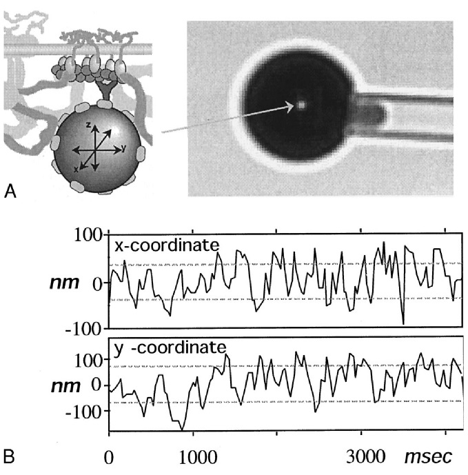
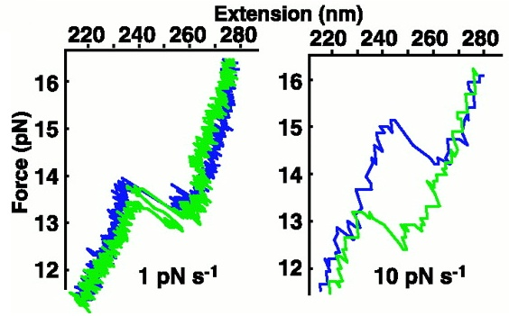
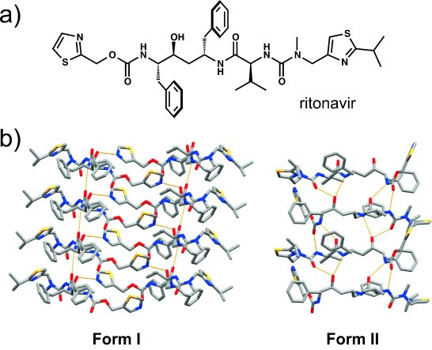

Introduction
Quick reference
- Liouville’s theorem: Hamiltonian dynamics preserves density in phase space.
Overview
Philosophical comments
It is fair to say that, although it originated in the 19th century like all other classical fields of physics, statistical mechanics is unsettled.
Trajectory-centric statistical mechanics. In this view, we start with the equations of motion for a physical system, then study statistical properties of individual trajectories, or collections of them. For example, if we have a pendulum hanging in air, being hit by air molecules all the time, we would study the total trajectory \((\theta, x_1, y_1, z_1, x_2, y_2, z_2, \dots)\), where \(\theta\) is the angle of the pendulum swing, and \((x_i, y_i, z_i)\) is the location of the \(i\)-th air molecule. Then we may ask that, over a long enough period, how frequent would the pendulum visit a certain angle range of \([\theta_0, \theta_0 + \delta\theta]\):
\[ Pr(\theta \in [\theta_0, \theta_0 + \delta\theta]) = \lim_{T \to \infty} \frac{1}{2T} \int_{-T}^{+T} 1[\theta \in [\theta_0, \theta_0 + \delta\theta]] dt \]
In the trajectory-centric view, there are the following issues:
- Problem of ergodicity: When does time-average equal ensemble-average? A system is called “ergodic” iff for almost all starting conditions, the time-average of the trajectory is the ensemble-average over all trajectories.
- Problem of entropy: How is entropy defined on a single trajectory?
- H-theorem: In what sense, and under what conditions, does entropy increase?
- Problem of equilibrium: What does it mean to say that a trajectory is in equilibrium?
- Approach to equilibrium: In what sense, and under what conditions, does the trajectory converge to an equilibrium?
- Reversibility problem (Umkehreinwand): If individual trajectories are reversible, why does entropy increase instead of decrease?
While these philosophical problems are quite diverting, we will avoid them as much as possible, because we will be working with the ensemble-centric equilibrium statistical mechanics. This is the statistical mechanics that every working physicist uses, and this is what we will present. If you are interested in the philosophical issues, read the Stanford Encyclopedia entry on the Philosophy of Statistical Mechanics.
Principles of statistical mechanics
- A physical system is a classical system with a state space, evolving according to some equation of motion.
- An ensemble of that system is a probability distribution over its state space.
- The idea of (ensemble-centric) statistical mechanics is to study the evolution of an entire probability distribution over all possible states.
- The entropy of a probability distribution \(\rho\) is
\[S[\rho] := -\int dx\; \rho(x) \ln \rho(x)\]
- Under any constraint, there exists a unique ensemble, named the equilibrium ensemble, which maximizes entropy under constraint.
Most of the times, the state space is a phase space, and the equation of motion is described by a Hamiltonian function. However, the machinery of statistical mechanics, as given above, is purely mathematical. It can be used to study any problem in probability whatsoever, even those with no physical meaning.
Believe it or not, the above constitutes the entirety of equilibrium statistical mechanics. So far, it is a purely mathematical theory, with no falsifiability (Popperians shouting in the background). To make it falsifiable, we need to add one more assumption, necessarily fuzzy:1
1As far as the laws of mathematics refer to reality, they are not certain; and as far as they are certain, they do not refer to reality.
— Albert Einstein, Address to Prussian Academy of Sciences (1921)
- The equilibrium ensemble is physically meaningful and describes the observable behavior of physical systems.
In other words, when a physical system is at equilibrium, then everything observable can be found by studying it as if it has the maximum entropy distribution under constraint.
Of course, just what that “is physically meaningful” means, is another source of endless philosophical arguments. I would trust that you will know what is physically meaningful, and leave it at that, while those who have a taste for philosophy can grapple with the Duhem–Quine thesis.
Differential entropy depends on coordinates choice
There is a well-known secret among information theorists: differential entropy is ill-defined.
Consider the uniform distribution on \([0, 1]\). It is the maxent distribution on \([0, 1]\) – relative to the Lebesgue measure. However, why should we pick the Lebesgue measure, and what happens if we don’t?
Suppose we now stretch the \([0, 1]\) interval nonlinearly, by \(f(x) = x^2\), then the maxent distribution relative to that would no longer be the uniform distribution on \([0, 1]\). Instead, it would be the uniform distribution after stretching.
The problem is this: Differential entropy is not coordinate-free. If we change the coordinates, we change the base measure, and the differential entropy changes as well.
To fix this, we need to use the KL-divergence, which is invariant under a change of base measure, as in \[-D_{KL}(\rho \| \mu) := - \int dx\; \rho(x) \ln\frac{\rho(x)}{\mu(x)}\]
In typical situations, we don’t need to worry ourselves with KL-divergence, as we just pick the uniform distribution \(\mu\). When the state space is infinite in volume, the uniform distribution is not a probability measure, but it will work. Bayesians say that it is an improper prior.
In this interpretation, the principle of “maximum entropy distribution under constraint” becomes the principle of “minimal KL-divergence under constraint”, which is Bayesian inference, with exactly the same formulas.
In almost all cases, we use the uniform prior over phase space. This is how Gibbs did it, and he didn’t really justify it other than saying that it just works, and suggesting it has something to do with Liouville’s theorem. Now with a century of hindsight, we know that it works because of quantum mechanics: We should use the uniform prior over phase space, because phase space volume has a natural unit of measurement: \(h^N\), where \(h\) is Planck’s constant, and \(2N\) is the dimension of phase space. As Planck’s constant is a universal constant, independent of where we are in phase space, we should weight all of the phase space equally, resulting in a uniform prior.
Mathematical developments
Fundamental theorems
Theorem 1 (Liouville’s theorem) For any phase space and any Hamiltonian over it (which can change with time), phase-space volume is conserved under motion.
For any probability distribution \(\rho_0\), if after time \(t\), it evolves to \(\rho_t\), and a point \(x(0)\) evolves to \(x(t)\), then \(\rho_0(x(0)) = \rho_t(x(t))\).
The proof is found in any textbook, and also Wikipedia. Since it is already simple enough, and I can’t really improve upon it, I won’t.
Corollary 1 (conservation of entropy) For a Hamiltonian system, with any Hamiltonian (which can change with time), for any probability distribution \(\rho\) over its phase space, its entropy is conserved over time.
In particular, we have the following corollary:
Corollary 2 Given any set of constraints, if the Hamiltonian preserves these constraints over time, then any constrained-maximal entropy distribution remains constrained-maximal under time-evolution.
In most cases, the constraint is of a particular form: the expectation is known. In that case, we have the following theorem:
Theorem 2 (maximal entropy under linear constraints) For the following constrained optimization problem
\[ \begin{cases} \max_\rho S[\rho] \\ \int A_1(x) \rho(x) &= \bar A_1 \\ \cdots &= \cdots \\ \int A_n(x) \rho(x) &= \bar A_n \\ \end{cases} \]
Consider the following ansatz
\[ \rho(x) = \frac{1}{Z(a_1, \dots, a_n)} e^{-\sum_i a_i A_i(x)} \]
where \(Z(a_1, \dots, a_n) = \int e^{-\sum_i a_i A_i(x)} dx\), and \(a_1, \dots, a_n\) are chosen such that the constraints \(\int A_i(x) \rho(x) = \bar A_i\) are satisfied.
If the ansatz exists, then it is the unique solution.
The ansatz solution is what you get by Lagrangian multipliers. For a refresher, see the Analytical Mechanics#Lagrange’s devil at Disneyland. The theorem shows that the solution is unique – provided that it exists. Does it exist? Yes, in physics. If it doesn’t exist, then we are clearly not modelling a physically real phenomenon.
In physics, these are “Boltzmann distributions” or “Gibbs distributions”. In statistics, these are exponential families. Because they are everywhere, they have many names.
Define a distribution \(\rho\) as given in the statement of the theorem. That is,
\[ \rho(x) = \frac{1}{Z(a_1, \dots, a_n)} e^{-\sum_i a_i A_i(x)} \]
etc.
Now, it remains to prove that for any other \(\rho'\) that satisfies the constraints, we have \(S[\rho] \geq S[\rho']\).
By routine calculation, for any probability distribution \(\rho'\),
\[ D_{KL}(\rho' \| \rho) = -S[\rho'] + \sum_i a_i \braket{A_i}_{\rho'} + \ln Z(a_1, \dots, a_n) \]
If \(\rho'\) satisfies the given constraints, then \(D_{KL}(\rho' \| \rho) = -S[\rho'] + Const\) where the constant does not depend on \(\rho'\), as long as it satisfies the constraints. Therefore, \(S[\rho']\) is maximized when \(D_{KL}(\rho' \| \rho)\) is minimized, which is exactly \(\rho\).
The following proposition is often used when we want to maximize entropy in a two-step process:
Theorem 3 (compound entropy) If \(\rho_{X,Y}\) is a probability distribution over two variables \((X, Y)\), then
\[S[\rho_{X,Y}] = S[\rho_Y] + \braket{S[\rho_{X|y}]}_y\]
or more succinctly,
\[S_{X,Y} = S_Y + \braket{S_{X|y}}_y\]
\(\rho_Y\) is the probability distribution over \(Y\), after we integrate/marginalize \(X\) away:
\[ \rho_Y(y) := \int \rho_{X,Y}(x,y)dx \]
\(\rho_{X|y}\) is the conditional probability distribution over \(X\), conditional on \(Y=y\):
\[ \rho_{X|y}(x) := \frac{\rho_{X,Y}(x,y)}{\int \rho_{X,Y}(x,y) dx} \]
\(\braket{\cdot}_y\) is the expectation over \(\rho_Y\):
\[ \braket{S_{X|y}}_y := \int S_{X|y} \rho_Y(y)dy \]
Consider a compound system in ensemble \(\rho(x, y)\). Its entropy is
\[S[\rho] = -\int dxdy \; \rho(x, y) \ln \rho(x, y)\]
We can take the calculation in two steps:
\[S[\rho] = -\int dxdy \; \rho(x|y)\rho(y) (\ln \rho(x|y) + \ln \rho(y)) = S[\rho_Y] + \mathbb{E}_y[S[\rho_{X|y}]]\]
Intuitively, what does \(S_{X,Y} = S_Y + \braket{S_{X|y}}_y\) mean? It means that the entropy in \((X, Y)\) can be decomposed into two parts: the part due to \(Y\), and the part remaining after we know \(Y\), but not yet knowing \(X\). In the language of information theory, the total information in \((X, Y)\) is equal to the information in \(Y\), plus the information of \(X\) conditional over \(Y\):
\[ I(X, Y) = I(Y) + I(X|Y) \]
Microcanonical ensembles
If the only constraint is the constant-energy constraint \(H(x) = E\), then the maximal entropy distribution is the uniform distribution on the shell of constant energy \(H = E\). It is uniform, because once we enforce \(H(x) = E\), there are no other constraints, and so by Theorem 2, the distribution is uniform.
Thus, we obtain the microcanonical ensemble:
\[\rho_E(x) \propto 1_{H(x) = E}\]
It is sometimes necessary to deal with the “thickness” of the energy shell. In that case, \(\rho_E(x) \propto \delta(H(x) - E)\), where \(\delta\) is the Dirac delta function.
By Theorem 2, the microcanonical ensemble is the unique maximizer of entropy under the constraint of constant energy. In particular, if the Hamiltonian does not change over time, then any microcanonical ensemble is preserved over time. In words, if we uniformly “dust” the energy shell of \(H(x) = E\) with a cloud of system states, and let all of them evolve over time, then though the dust particles move about, the cloud remains exactly the same.
More generally, we can impose more (in)equality constraints, and still obtain a microcanonical ensemble. For example, consider a ball flying around in an empty room with no gravity. The Hamiltonian is \(H(q, p) = \frac{p^2}{2m}\), and its microcanonical ensemble is \(\rho(q, p) \propto \delta(p = \sqrt{2mE})1[p \in \text{the room}]\). That is, its velocity is on the energy shell, while its position is uniform over the entire room.
If we want to specify the number of particles for each chemical species, then that can be incorporated into the microcanonical ensemble as well. For example, if we want the number of species \(i\) be exactly \(N_{i0}\), then we multiply \(\rho\) by \(1[N_i = N_{i0}]\).
Canonical ensembles
If we have a small system connected to a large system, then we typically don’t care about the large system, and only want to study the ensemble of the small system. In this case, we would first find the microcanonical ensemble for the total system, then integrate out of the large system, resulting in an ensemble over just the small system, as in
\[\rho_{\text{small}}(x) = \int \rho_{\text{total}}(x, y) dy\]
where \(x\) ranges over the states of the small system, and \(y\) of the large system.
Assuming that the energy of the compound system is extensive, we obtain the canonical ensemble. Assuming that the energy and volume are both extensive, we obtain the grand canonical ensemble, etc. The following table would be very useful
| extensive constraint | ensemble | free entropy |
|---|---|---|
| none | microcanonical | entropy |
| energy | canonical | Helmholtz free entropy |
| energy, volume | ? | Gibbs free entropy |
| energy, particle count | grand canonical | Landau free entropy |
| energy, volume, particle count | ? | ? |
There are some question marks in the above table, because there are no consensus names for those question marks. What is more surprising is that there is no name for the ensemble of constrained energy and volume. I would have expected something like the “Gibbs ensemble”, but history isn’t nice to us like that. Well, then I will name it first, as the big canonical ensemble. And while we’re at it, let’s fill the last row as well:
| extensive constraint | ensemble | free entropy |
|---|---|---|
| none | microcanonical | entropy |
| energy | canonical | Helmholtz free entropy |
| energy, volume | big canonical | Gibbs free entropy |
| energy, particle count | grand canonical | Landau free entropy |
| energy, volume, particle count | gross canonical | EVN free energy |
In classical thermodynamics, extensivity means that entropy of the compound system can be calculated in a two-step process: calculate the entropy of each subsystem, then add them up. The important fact is that a subsystem still has enough independence to have its own entropy.
This is not always obvious. If we have two galaxies of stars, we can think of each as a “cosmic gas” where each particle is a star. Now, if we put them near each other, then the gravity between the two galaxies would mean it is no longer meaningful to speak of “the entropy of galaxy 1”, but only “the entropy of galaxy-compound 1-2”.
In statistical mechanics, extensivity means a certain property of each subsystem is unaffected by the state of the other subsystems, and the total is the sum of them. So for example, if \(A\) is an extensive property, then it means
\[ A(x_1, \dots, x_n) = A_1(x_1) + \dots + A_n(x_n) \]
Like most textbooks, we assume extensivity by default, although as we noted in Classical Thermodynamics and Economics, both classical thermodynamics and statistical mechanics do not require extensivity. We assume extensivity because it is mathematically convenient, and good enough for most applications.
In the following theorem, we assume that the total system is extensive, and is already in the maximal entropy distribution (microcanonical ensemble)
Theorem 4 If the two systems are in energy-contact, and energy is conserved, and energy is extensive, and the compound system is in a microcanonical ensemble, the small system is in a canonical ensemble
\[ \rho(x) \propto e^{-\beta H(x)} \]
where \(\beta\) is the marginal entropy of energy of the large system:
\[\beta := \partial_E S[\rho_{bath, E}]\]
Similarly, if the two systems are in energy-and-particle-contact, then the small system has the grand canonical ensemble
\[ \rho(x) \propto e^{-(\beta H(x) + (-\beta \mu) N(x))} \]
where \(-\beta\mu\) is the marginal entropy of particle of the large system:
\[-\beta\mu := (\partial_N S[\rho_{bath, E, N}])_{E}\]
Most generally, if the two systems are in \(q_1, \dots, q_m\) contact, and \(q_1, \dots, q_m\) are conserved and extensive quantity, then
\[\rho(x) \propto e^{-\sum_i p_i q_i(x)}\]
where \(p_i = (\partial_{q_i} S[\rho_{bath, q}])_{q}\) is the marginal entropy of \(q_i\) of the large system.
We prove the case for the canonical ensemble. The other cases are similar.
Since the total distribution of the whole system is the maximal entropy distribution, we are faced with a constrained maximization problem:
\[\max_\rho S[\rho]\]
By Theorem 3,
\[S = S_{\text{system}}(E_{\text{system}}) + \braket{S_{bath|system}(E_{total} - E_{\text{system}})}_{\text{system}}\]
Since the bath is so much larger than the system, we can take just the first term in its Taylor expansion:
\[S_{bath|system}(E_{total} - E_{\text{system}}) = S_{\text{bath}}(E_{total}) - \beta E_{\text{system}}\]
where \(E_{total}\) is the total energy for the compound system, \(\beta = \partial_E S_{\text{bath}}|_{E = E_{total}}\) is the marginal entropy per energy, and \(E_{\text{system}}\) is the energy of the system.
This gives us the linearly constrained maximization problem of
\[\max_{\rho_{\text{system}}} (S_{\text{system}} - \beta \braket{E_{\text{system}}}_{\rho_{\text{system}}})\]
and we apply Lagrange multipliers to finish the proof.
Extensivitiy in statistical mechanics yields extensivity in thermodynamics. Specifically, writing \(S_{\text{bath}}(E)\), instead of \(S_{\text{bath}}(E, E_{\text{system}})\), requires the assumption of extensivity. Precisely because the bath and the system do not affect each other, we are allowed to calculate the entropy of the bath without knowing anything about the energy of the system.
\(S_{\text{bath}}\) is the logarithm of the surface area of the energy shell \(H_{\text{bath}} = E_{\text{bath}}\). By extensivity, \(H(x_{\text{bath}}, x_{\text{system}}) = H_{\text{bath}}(x_{\text{bath}}) + H_{\text{system}}(x_{\text{system}})\), so the energy shells of the bath depends on only \(E_{\text{bath}}\), not \(E_{\text{system}}\).
The proof showed something extra: If the small system is in distribution \(\rho\) that does not equal to the equilibrium distribution \(\rho_B\), then the total system’s entropy is
\[S = S_{max} - D_{KL}(\rho \| \rho_B)\]
which is related to of Sanov theorem and large deviation theory, though I don’t know how to make this precise.
What if we have a system in volume-contact, but not thermal-contact? This might happen when the system is a flexible bag of gas held in an atmosphere, but the bag is thermally insulating. Notice that in this case, the small system still exchanges energy with the large system via \(d\braket{E} = -Pd\braket{V}\). We don’t have \(E = -PdV\), because the small system might get unlucky. During a moment of weakness, all its particles has abandoned their frontier posts, and the bath has taken advantage of this by encroaching on its land. The system loses volume by \(\delta V\), without earning a compensating \(\delta E = P \delta V\). In short, the thermodynamic equality \(E = -PdV\) is inexact in statistical mechanics, and only holds true on the ensemble average.
In this case, because pressure is a constant, we have \(d(E + PV) = 0\), and so we have the enthalpic ensemble \(\rho \propto e^{-\beta H}\), where \(H := E + PV\) is the enthalpy,2.
Specifically, if you work through the same argument, you would end up with the following constrained maximization problem:
\[ \begin{cases} \max_{\rho_{\text{system}}} (S_{\text{system}} - \beta \braket{E_{\text{system}}}_{\rho_{\text{system}}} - \beta P \braket{V}) \\ \braket{E_{\text{system}}} + P\braket{V_{\text{system}}} = Const \end{cases} \]
yielding the enthalpic ensemble (or the isoenthalpic-isobaric ensemble).
2 Sorry, I know this is not Hamiltonian, but we are running out of letters.
Free entropies
Just like in thermodynamics, it is useful to consider free entropies, which are the convex duals of the entropy:
- Helmholtz free entropy: \(f[\rho] := S[\rho] - \beta \braket{E} = \int dx \; \rho(x) (-\ln \rho(x) - \beta E(x))\);
- Gibbs free entropy: \(g[\rho] = S[\rho] - \beta \braket{E} - \beta P \braket{V}\);
- Landau free entropy: \(\omega[\rho] = S[\rho] - \beta \braket{E} + \beta \mu \braket{N}\);
etc. Of those, we would mostly use the Helmholtz free energy, so I will write it down again:
\[ f[\rho] := S[\rho] - \beta \braket{E} = \int dx \; \rho(x) (-\ln \rho(x) - \beta E(x)) \]
Theorem 5 (chain rule for free entropies) \(f_X = S_Y + \braket{f_{X|y}}_y\), and similarly \(g_X = S_Y + \braket{g_{X|y}}_y\), and similarly for all other free entropies.
\[ \begin{aligned} f_X &= S_X - \beta \braket{E}_x \\ &= S_Y + \braket{S_{X|y}}_y - \beta \braket{\braket{E}_{x \sim X|y}}_y \\ &= S_Y + \braket{f_{X|y}}_y \end{aligned} \]
A common trick in statistical mechanics is to characterize the same equilibrium in many different perspectives. For example, the canonical ensemble has at least 4 characterizations at least. “Muscle memory” in statistical mechanics would allow you to nimbly applying the most suitable one for any occasion.
Theorem 6 (4 characterizations of the canonical ensemble)
- (total entropy under fixed energy constraint) The canonical ensemble maximizes total entropy when the system is in contact with an energy bath that satisfies \(\partial_E S_{\text{bath}} = \beta\), and the total energy is fixed.
- (entropy under mean energy constraint) A system maximizes its entropy under constraint \(\braket{E} = E_0\) when it assumes the canonical ensemble with \(\beta\) that is the unique solution to \(\int dx \; e^{-\beta E(x)} = E_0\).
- (thermodynamic limit): Take \(N\) copies of a system, and connect them by energy-contacts. Inject the system with total energy \(NE_0\), and let the system reach its microcanonical ensemble. Then at the thermodynamic limit of \(N\to \infty\), the distribution of a single system is the canonical distribution with \(\beta\) that is the unique solution to \(\int dx \; e^{-\beta E(x)} = E_0\).
- (free entropy) A system maximizes its Helmholtz free entropy when it assumes the canonical ensemble. At the optimal distribution \(\rho^*\), the maximal Helmholtz free entropy is \(f[\rho^*] = \ln Z\), where \(Z = \int dx \; e^{-\beta E(x)}\) is the partition function.
- We already proved this.
- Use the Lagrange multiplier.
- Isolate one system, and treat the rest as an energy-bath.
- \(f[\rho] = \ln Z - D_{KL}(\rho \| \rho_B)\).
The partition function
When the system is in a canonical ensemble, we can define a convenient variable \(Z = \int dx\; e^{-\beta E(x)}\) called the partition function. As proven in Theorem 6, the partition function is equal to \(e^f\), where \(f\) is the Helmholtz free entropy of the canonical ensemble.
Theorem 7 (the partition function is the cumulant generating function of energy) Let a system be in canonical ensemble with inverse temperature \(\beta\), and let \(K(t) := \ln \braket{e^{tE}}\) be the cumulant generating function of its energy, then \[K(t) = \ln Z(\beta-t) - \ln Z(\beta)\]
In particular, the \(n\)-th cumulant of energy is
\[\kappa_n(E) = K^{(n)}(t) |_{t=0} = (-\partial_\beta)^n (\ln Z)\]
A similar proposition applies for the other ensembles and their free entropies.
The proof is by direct computation.
For example, the first two cumulants are the mean and variance:
\[\braket{E} = (-\partial_\beta) (\ln Z), \quad \mathrm{Var}(E) = \partial_\beta^2 (\ln Z)\]
Typical systems are made of \(N\) particles, where \(N\) is large, and that these particles are only weakly interacting. In this case, the total Helmholtz free entropy per particle converges at the thermodynamic limit of \(N \to \infty\):
\[ \lim_N \frac 1N \ln Z \to \bar f_\beta \]
Thus, for large but finite \(N\), we have
\[\braket{E} \approx -N \partial_\beta \bar f_\beta, \quad \mathrm{Var}(E) = N\partial_\beta^2 \bar f_\beta\]
In particular, the relative fluctuation scales like \(\frac{\sqrt{\mathrm{Var}(E)}}{\braket{E}} \sim N^{-1/2}\).
Conditional entropies
Given any two random variable \(X, Y\), and an “observable” variable \(Y\) that is determined by \(X\) by some function \(h\), such that \(Y = h(X)\). If we know \(X\), we would know \(Y\), but it is not so conversely, as multiple \(X\) may correspond to the same \(Y\). Typically, we use \(Y\) as a “summary statistic” for the more detailed, but more complicated \(X\). For example, we might have multiple particles in a box, such that \(X\) is their individual locations, while \(Y\) is their center of mass.
Theorem 8 (conditional entropy) Given any random variable \(X\), and an “observable” variable \(Y\) that is determined by \(X\), and some constraints \(c\) on \(X\), if \(X\) is the distribution that maximizes entropy under constraints \(c\), with entropy \(S_X^*\), then the observable \(Y\) is distributed as
\[\rho_Y^*(y) = e^{S_{X|y}^* - S_X^*}, \quad e^{S_X^*} = \int dy\; e^{S_{X|y}^*}\]
where \(S_{X|y}^*\) is the maximal entropy for \(X\) conditional on the same constraints, plus the extra constraint that \(Y = y\).
By assumption, \(X\) is the unique solution to the constrained optimization problem
\[ \begin{cases} \max S_X \\ \text{constraints on $x$} \end{cases} \]
By Theorem 3, the problem is equivalent to:
\[ \begin{cases} \max S_Y + \braket{S_{X|y}}_{y\sim Y} \\ \text{constraints on $x$} \end{cases} \]
Now, we can solve the original problem in a two-step process: For each possible observable \(y\sim Y\), we solve an extra-constrained problem:
\[ \begin{cases} \max S_{X|y} \\ \text{original constraints on $x$} \\ \text{$x$ must be chosen such that the observable $Y = y$} \end{cases} \]
Then, each such problem gives us a maximal conditional3 entropy \(S_{X|y}^*\), and we can follow it up by solving for \(Y\) with
\[\max\left(S_Y + \braket{S_{X|y}^*}_{y \sim Y}\right)\]
Again, the solution is immediate once we see it is just the KL-divergence:
\[S_Y + \braket{S_{X|y}^*}_{y \sim Y} = - \int dy \; \rho_Y(y) \ln\frac{\rho_Y(y)}{e^{S_{X|y}^*}} = \ln Z - D_{KL}(\rho_Y \| \rho_Y^*)\]
where
\[Z = \int dy\; e^{S_{X|y}^*}, \quad \rho_Y^*(y) = \frac{e^{S_{X|y}^*}}{Z}\]
At the optimal point, the entropy for \(X\) is maximized at \(S_X^* = \ln Z - 0\), so \(Z = e^{S_X^*}\).
3 If you’re a pure mathematician, you can formalize this using measure disintegration.
Consider a small system with energy states \(E_1, E_2, \dots\) and a large bath system, in energy contact. We can set \(X\) to be the combined state of the whole system, and \(Y\) to be the state of the small system. Once we observe \(y\), we have fully determined the small system, so the small system has zero entropy, and so all the entropy comes from the bath system: \[S_{X|y}^* = S_{\text{bath}} = S_{\text{bath}}(E_{total}) - \beta E_y\]
Consequently, the distribution of the small system is \(\rho_Y(y) \propto e^{-\beta E_y}\), as we expect.
A similar calculation gives us the grand canonical ensemble, etc.
Theorem 9 (conditional free entropy) Given any random variable \(X\), and an “observable” variable \(Y\) that is determined by \(X\), and some constraints \(c\) on \(X\), if \(X\) is the distribution that maximizes Helmholtz free entropy under constraints \(c\), with Helmholtz free entropy \(f_X^*\), then the observable \(Y\) is distributed as \[\rho_Y^*(y) = e^{f_{X|y}^* - f_X^*}, \quad e^{f_X^*} = \int dy\; e^{f_{X|y}^*}\]
where \(f_{X|y}^*\) is the maximal Helmholtz free entropy for \(X\) conditional on the same constraints, plus the constraint that \(Y = y\).
Similarly for Gibbs free entropy, and all other free entropies.
First note that \(f_X = S_Y + \braket{f_{X|y}}_y\), then argue in the same way.
Kinetic gas theory
Kinetic gas theory is the paradigm for pre-1930 statistical mechanics. Boltzmann devoted his best years to kinetic gas theory. The connection between kinetic gas theory and statistical mechanics was so strong that it was often confused as one. Modern statistical mechanics has grown to be so much more than this, so we will only settle for deriving the van der Waals equation. This strikes a balance between triviality (the ideal gas equation could be derived in literally two lines) and complication (Boltzmann’s monumental Lectures on Gas Theory has 500 pages (Boltzmann 2011)).
To review, the van der Waals gas equation is
\[P = \frac{N/\beta}{V- bN} - \frac{cN^2}{V^2}\]
where \(b, c\) are real numbers that depend on the precise properties of the gas molecules. The term \(V - bN\) accounts for the fact that each gas molecule excludes some volume, so that, as \(N\) grows, it corrects for the ideal gas pressure \(P_{ideal}\) by \(\sim P_{ideal}\frac{bN}{V}\). The term \(\frac{cN^2}{V^2}\) accounts for overall interaction energy between gas molecules. Suppose the interaction is overall attractive, then we would have \(c > 0\), and otherwise \(c < 0\).
Ideal gas
Consider a tank of ideal gas consisting of \(N\) point-masses, flying around in a free space with volume \(V\). The tank of gas has inverse temperature \(\beta\), so its phase-space distribution is
\[ \rho(q_{1:N}, p_{1:N}) = \prod_{i\in 1:N} \rho(q_i, p_i), \quad \rho(q, p) = \underbrace{\frac{1}{V}}_{\text{free space}} \times \underbrace{\frac{e^{-\beta \frac{\|p_i\|^2}{2m}}}{(2\pi m/\beta)^{3/2}}}_{\text{Boltzmann momentum distribution}} \]
The total energy of the gas has no positional term, so it is all due to momentum. Because the momenta coordinates \(p_{1,x}, p_{1,y}, \dots, p_{N,y}, p_{N,z}\) do not interact, their kinetic energies simply sum, giving
\[ U = 3N \times \int_{\mathbb{R}}dp\; \frac{p^2}{2m} \frac{e^{-\frac{p^2}{2m/\beta}}}{\sqrt{2\pi m/\beta}} = \frac{3N}{2\beta} \]
This is the same as Boltzmann’s derivation so far. However, although entropy is exactly defined when there are only finitely or countably many possible states, as \(\sum_{j \in \mathbb{N}} -p_j \ln p_j\), this is not so when state space is uncountably large, like \(\mathbb{R}^{6N}\). When Boltzmann encountered the issue, he solved it by discretizing the phase space into arbitrary but small cubes. The effect is that he could rederive the ideal gas laws, but the entropy has an additive constant that depends on the exact choice of the cube size. This was not a problem for Boltzmann, who was trying to found classical thermodynamics upon statistical mechanics, and in classical thermodynamics, entropy does have an indeterminant additive constant.
Later, Planck in his derivation of the blackbody radiation law, used the same trick. Ironically, Planck did not believe in atoms nor quantized light, but he did make the correct assumption that there is a natural unit of measurement for phase space area, which he called \(h\), and which we know as Planck’s constant. (Duncan and Janssen 2019, chap. 2).
Following Planck, we discretize the phase space into little cubes of size \(h^{3N}\), and continue:
\[ \begin{aligned} S &= -\sum_{i \in\text{Little cubes}} p_i \ln p_i \\ &\approx -\sum_{i \in\text{Little cubes}} (\rho(i) h^{3N}) \ln (\rho(i) h^{3N}) \\ &\approx -\int_{\mathbb{R}^{6N}} dp_{1:N}dq_{1:N} \; \rho(p_{1:N}, q_{1:N}) \ln (\rho(p_{1:N}, q_{1:N}) h^{3N}) \\ &= -\int_{\mathbb{R}^{6N}} dp_{1:N}dq_{1:N} \; \rho(p_{1:N}, q_{1:N}) \ln \rho(p_{1:N}, q_{1:N}) - 3N \ln h \\ &= -\underbrace{N\int_{\mathbb{R}^{6}} dpdq \; \rho(p, q) \ln \rho(p, q)}_{\text{non-interacting particles}} - 3N \ln h \end{aligned} \]
Now, the entropy of a single atom \(\int_{\mathbb{R}^{6}} dpdq \; \rho(p, q) \ln \rho(p, q)\) factors again into one position space and three momentum spaces:
\[ \begin{aligned} -\int_{\mathbb{R}^{6}} dpdq \; \rho(p, q) \ln \rho(p, q) &= -\int_{\mathbb{R}^3} dq \rho(q) \ln \rho(q) - \sum_{i = x, y, z} \int_{\mathbb{R}} dp_i \ln \rho(p_i) \\ &= \ln V + 3 \times \underbrace{(\text{entropy of }\mathcal N(0, m/\beta))}_{\text{check Wikipedia}} \\ &= \ln V + \frac 32 \ln(2\pi m/\beta) + \frac 32 \\ \end{aligned} \]
Does this remind you of our previous discussion about how differential entropy is ill-defined? Finally that discussion is paying off! The choice of a natural unit of measurement in phase space is equivalent to fixing a natural base measure on phase space, such that differential entropy becomes well-defined.
The above is not yet correct, because permuting the atoms does not matter. That is, we have grossly inflated the state space. For example, if \(N = 2\), then we have counted the state \((q_1, p_1, q_2, p_2)\), then \((q_2, p_2, q_1, p_1)\), as if they are different, but they must be counted as the same. We must remove this redundancy by “quotienting out” the permutation group over the particles. The effect is dividing the phase space by \(\ln N!\):
\[ \begin{aligned} \frac SN &= \ln V + \frac 32 \ln(2\pi m/\beta) + \frac 32 - 3 \ln h - \underbrace{\frac 1N \ln N!}_{\text{Stirling's approximation}} \\ &= \ln\left[\frac{V}{N} \left(\frac{2\pi m}{\beta h^2}\right)^{\frac 32}\right] + \frac 52 \end{aligned} \]
giving us the Sackur–Tetrode formula:
\[ S(U, V, N) = \ln\left[\frac{V}{N} \left(\frac{4\pi m U}{3N h^2}\right)^{\frac 32}\right] + \frac 52 \]
All other thermodynamic quantities can then be derived from this. For example, the pressure is
\[P = \beta^{-1}(\partial_V S)_{U, N} = \frac{1}{\beta V}\]
more conventionally written as \(PV = \beta^{-1} = Nk_BT\), the ideal gas equation, where we have re-inserted the Boltzmann constant in respect for tradition.
In early 1900s, Walther Nernst proposed the third law of thermodynamics. The history is rather messy, but suffice to say that the version we are going to care about says, “At the absolute zero of temperature the entropy of every chemically homogeneous solid or liquid body has a zero value.”. In support, he studied experimentally the thermodynamic properties of many materials at temperatures approaching absolute zero. He had a hydrogen liquefier and could reach around \(20 \;\mathrm{K}\).
Working on the assumption that \(S = 0\) in any chemical at \(T = 0\), he could measure the entropy of any substance by slowing heating up a substance (or cooling down), measuring its heat capacity at all temperatures, then take an integral:
\[ k_B S = \int \frac{CdT}{T} \]
The low-temperature data for mercury was the most available (mercury was also the substance with which Onnes discovered superconductivity). However, mercury is mostly in a liquid form at low temperatures. Fortunately, the latent heat of vaporization \(\Delta L\) can be measured, and then we can get
\[ S_{\text{vapor}} = S_{\text{liquid}} + \frac{\Delta L}{k_BT} \]
Back then, \(k_B = \frac{\text{Gas constant}}{\text{Avogadro constant}}\), and the \(S_{\text{liquid}}, \Delta L\) of mercury were all measured, so combining these, Tetrode calculated a value of \(h\) that is within \(30\%\) of modern measurement. (Grimus 2013)
Ideal gas (again)
We rederive the thermodynamic properties of ideal monoatomic gas via Helmholtz free entropy.
\[Z = \int e^{-\beta E} = \underbrace{\frac{1}{N!}}_{\text{identical particles}} \underbrace{V^N}_{\text{position}} \underbrace{(2\pi m/\beta )^{\frac 32 N}}_{\text{momentum}}\]
By the same formula from classical thermodynamics,
\[ d\ln Z = -\braket{E}d\beta + \beta\braket{P} dV \implies \begin{cases} \braket{E} &= \frac 32 \frac{N}{\beta} \\ \braket{P}V &= \frac{N}{\beta} \end{cases} \]
Notice how the \(\ln N!\) part simply does not matter in this case.
Hard ball gas (dilute gas limit)
In order to refine the approach, we need to account for two effects.
- Each particle takes up finite volume, which forces the total volume of positional space to be smaller than \(V^N\).
- Particle pairs have interactions, which changes the Boltzmann distribution.
The first effect can be modelled by assuming each atom is a hard ball of radius \(r\). The particles still have no interaction except that their positions cannot come closer than \(2r\).
Because there is no potential energy, the Boltzmann distribution on momentum space is the same, and so the Helmholtz free entropy \(\ln Z\) still splits into the sum of positional entropy and momentous entropy. The momentum part is still \(\frac 32 N \ln\frac{2\pi}{\beta m}\), as the hard balls do not interfere with each other’s momentum, but the position part is smaller, because the balls mutually exclude each other.
Let \(a = 8V_{ball} = \frac{32}{3}\pi r^3\) be a constant for the gas.
To measure the volume of the diminished position space, we can add one hard ball at a time. The first hard ball can take one of \(V\) possible positions, as before. The next ball’s center cannot be within \(2r\) of the center of the first ball, so its position can only take one of \((V - a)\) positions, where \(a = 8V_{ball} = \frac{32}{3}\pi r^3\) is a constant that depends on the shape of the hard balls. We continue this argument, obtaining the total volume in position space:
\[V(V- a) \cdots (V - (N-1)a) \approx V^N e^{0 -\frac{a}{V}-2\frac{a}{V} -\dots -(N-1)\frac{a}{V}} \approx V^N\left(1- \frac{N^2 a}{2V} \right)\]
This gives us
\[\braket{E} = \frac{3N}{2\beta}, \quad \braket{P}V \approx \frac N\beta \left(1 + \frac{a N}{2V}\right) \approx \frac{N/\beta}{V - \frac a2 N}\]
The second equation is the van der Waals equation when the term \(c = 0\), meaning there is neither attraction nor repulsion between particles.
In the above derivation, we are assuming that only pairwise exclusion matters. That is, we ignore the possibility that three or more balls may simultaneously intersecting each other. We can make a more accurate counting argument via the inclusion-exclusion principle, which would lead us to a virial expansion for gas.
Specifically, if the balls \(A, B\) are intersecting, which has probability \(a/V\), and \(B, C\) are also intersecting, also with probability \(a/V\), then \(A, C\) are quite likely to be also intersecting, with probability much higher than \(a/V\). Therefore, if we have excluded the cases where \(A, B\) are intersecting by subtracting with \(a/V\), and the cases where \(B, C\) are intersecting by subtracting another \(a/V\), then we should be subtracting with something less than \(a/V\). The cluster expansion principle makes this precise. Unfortunately, it requires some difficult combinatorics. The interested reader should study (Andersen 1977).
Soft ball gas (high temperature and dilute gas limit)
In the above derivation, we got one part of van der Waals equation right – the part where particles take up space. However, we have not yet accounted for the force between particles. We expect that if the particles attract each other, then \(P\) should be smaller, and if the particles repel each other, then \(P\) should be larger.
Let’s assume the gas is made of balls that has a hard core and a soft aura. That is, they repulse or attract each other at a distance, and when a pair comes too close. We also assume the force law depends only on the distances between particles.
That is, we can write such a system as having a gas potential energy \(V(q_1, \dots, q_N) = \sum_{i < j} V(\|q_i - q_j\|)\). To enforce the hard core, we should have \(V(r) = \infty\) when \(r \in [0, r_0]\).
Now, the partition function becomes
\[ Z = \int e^{-\beta\sum_i \frac{p_i^2}{2m} - \beta\sum_{i < j}V(\|q_i - q_j\|)} dqdp \]
The momentum part is still the same \((2\pi/\beta m)^{\frac 32 N}\), but the position part is more difficult now. Still, we hope it will be close to \(V^N\).
That is, we need to calculate:
\[Z = \underbrace{V^N (2\pi/\beta m)^{\frac 32 N} \frac{1}{V^N}}_{\text{ideal gas}} \int_{V^N} e^{ - \beta\sum_{i < j}V(\|q_i - q_j\|)} dq\]
The integral \(\int_{V^N} e^{ - \beta\sum_{i < j}V(\|q_i - q_j\|)} dq\) can be evaluated piece-by-piece: \[ \int_{V^N} e^{ - \beta\sum_{i < j}V(\|q_i - q_j\|)} dq = \int dq_1 \left(\int dq_2 \; e^{-\beta V(\| q_1 - q_2 \|)} \left(\int dq_3 \; e^{-\beta (V(\| q_1 - q_3 \|) + V(\| q_2 - q_3 \|))} \cdots\right)\right) \]
Because the chamber is so much larger than the molecular force-field, it is basically infinite. So for almost all of \(q_1\) (except when it is right at the walls of the chamber), \(\int dq_2 \; e^{-\beta V(\| q_1 - q_2 \|)} \approx V - \delta\), where \(\delta\) is some residual volume:
\[\delta := \int_{V} dq_2 \; (1 - e^{-\beta V(\|q_2 \|)})\]
Furthermore, because we are dealing with a dilute gas, the higher-order interactions don’t matter (see previous remark about the virial expansion). Therefore, the integral \[\int_{V} dq_3 \; e^{-\beta (V(\| q_1 - q_3 \|) + V(\| q_2 - q_3 \|))} \approx \int_{V_1 \cup V_2 \cup V_3} dq_3 \; e^{-\beta (V(\| q_1 - q_3 \|) + V(\| q_2 - q_3 \|))} \]
where \(V_1\) is the “turf” of particle \(1\), and \(V_2\) is the turf of particle \(2\), and \(V_3\) is the rest of the volume. Because the gas is dilute, we have basically \(V_1\) disjoint from \(V_2\), giving us
\[\approx \sum_{j = 1, 2, 3}\int_{V_j} dq_3\; e^{-\beta V(\| q_j - q_3 \|)} \approx V - 2\delta\]
Together, we have \[\int_{V^N} e^{ - \beta\sum_{i < j}V(\|q_i - q_j\|)} dq \approx V(V-\delta) \cdots(V - (N-1)\delta)\]
Giving us \[\ln Z \approx \ln Z_{\text{ideal}} - \frac{N^2 \delta}{2V}\]
It remains to calculate the residual volume. It has two parts, one due to the hard core and one due to the soft halo: \[\delta = \int_{\|q_2 \| \leq r_0} dq_2 \; (1 - e^{-\infty}) + \int_{\|q_2 \| > r_0} dq_2 \; (1 - e^{-\beta V(\|q_2\|)})\]
The first part is just \(a\), as calculated previously. The second part depends on the exact shape of the potential well. However, when temperature is high, \(\beta\) would be very small, so the second part is approximately \(\int dq_2 (\beta V)\), which is a constant times \(\beta\).
Thus, we have \[\ln Z \approx \ln Z_{\text{ideal}} - \frac{N^2}{V}(a + b \beta)\]
for some constants \(a, b\). This gives us the van der Waals equation: \[\braket{P} V = \frac{N}{\beta} + \frac{N^2}{\beta V}a + \frac{N^2}{V} b\]
Other classical examples
Countably many states
In a surprising number of applications, we have a single system in an energy bath. The system has finitely many, or countably infinitely many, distinguishable states, each with a definite energy: \(E_0 \leq E_1 \leq E_2 \leq \cdots\). In particular, this covers most of the basic examples from quantum mechanics. In such a system, the probability of being in state \(i\) is \(p_i = \frac 1Z e^{-\beta E_i}\) where
\[ Z = \sum_i e^{-\beta E_i} \]
Because I don’t like sections that are literally two paragraphs long, I will reformulate this as multinomial regression in mathematical statistics.
In the problem of classification, we observe some vector \(\vec X\), and we need to classify it into one of finitely many states \(\{1, 2, \dots\}\). With multinomial regression, we construct one vector \(\vec b_i\) for each possible state \(i\), and then declare that the probability of being in state \(k\) is
\[ Pr(i | X) = \frac{e^{-\vec X \cdot \vec b_i}}{Z(X)}, \quad Z(\vec X) = \sum_j e^{-\vec b_j \cdot \vec X} \]
To make the parallel clearer:
\[ \begin{aligned} \text{log probability} & & \text{observable } & &\text{ feature} & & \text{normalization constant} \\ \ln p(i | \beta) &=& -\beta & \; & E_i & & - \ln Z \\ \ln Pr(i | \vec X) &=& -\vec X & \cdot & \vec b_i & & - \ln Z \end{aligned} \]
We can make the analogy exact by adding multiple observables. Specifically, if we solve the following constrained optimization problem
\[ \begin{cases} \max S \\ \braket{\vec b} = \vec b_0 \end{cases} \]
then the solution is a multinomial classifier, with \(\vec X\) playing the role of \(\beta\).
Interpreting the physics as statistics, we can think of \(\beta\) as an “observable”. It is as if we are asking the physical system “What state are you in?” but we can only ask a very crude question “What is your energy on average?” Knowing that, we can make a reasonable guess by using the maximal entropy compatible with that answer.
Interpreting the statistics as physics, we can think of the observable \(\vec X\) as “entropic forces”, trying to push the system towards the distribution of maximal entropy. At the equilibrium of zero entropic force, we have a multinomial classifier. This is the prototypical idea of energy-based statistical modelling.
Fluctuation by \(N^{-1/2}\)
Suppose we have several tanks of oxygen gas that can exchange energy. They are in a microcanonical ensemble. Now, if we measure the total energy in the first tank, we would get a value \(E_1\). We sample it again after a while, and we would get another value. Averaging them, we would get \(\braket{E_1}\), which ought to match the prediction by classical thermodynamics. However, if thermodynamics is the theory of the average, then to go beyond it, statistical mechanics must predict the variance as well.
In Theorem 7, We had already seen that the partition function generates the mean, the variance, and all other terms. Here we expand on this.
Take several systems, and let them exchange energy, but nothing else. For concreteness, we can imagine taking several copper tanks of gas, and let them touch each other. The tanks hold their shape, not expanding or contracting. The system has total entropy
\[S = \sum_i S_i(E_i, A_i)\]
where \(A_i\) stand for the other state variables we don’t care about, because they are held constant. Now, there is a single constraint of constant total energy:
\[E = \sum_i E_i\]
In the thermodynamical limit, the compound system reaches the maximal entropy state \(E_1^*, \dots, E_n^*\), which solves the following constrained maximization
\[ \begin{cases} \max \sum_i S_i(E_i, A_i)\\ E = \sum_i E_i \end{cases} \]
By calculus, at the optimal point, all systems satisfy
\[ (\partial_{E_i} S_i)_{A_i} = \beta \]
for some number \(\beta\). This is the zeroth law of thermodynamics.
However, we are in statistical mechanics, so the compound system actually does not stay exactly at the optimal point. Instead, the energy levels fluctuate. Write the fluctuation vector as
\[Y = (\Delta E_1, \dots, \Delta E_n)\]
which satisfies the constraint \(\sum_i \Delta E_i = 0\).
Suppose we observe the fluctuation vector to be a certain value \(Y = y\), then by Theorem 8,
\[\rho_Y(y) \propto e^{S^*_{X|y}}\]
where \(S^*_{X|y}\) is the entropy of the compound system, given \(Y = y\). For small fluctuations, we do a Taylor expansion:
\[S^*_{X|y} = \sum_i S_i(E_i^*) + \underbrace{(\partial_{E_i} S_i)_{A_i}}_{\text{$=\beta$}} \Delta E_i + \frac 12 (\partial_{E_i}^2 S_i)_{A_i} (\Delta E_i)^2 + \cdots\]
Since \(\sum_i \Delta E_i = 0\) at the equilibrium point,
\[\rho_Y(\Delta E) \propto e^{\sum_i \frac 12 (\partial_{E_i}^2 S_i)_{A_i} (\Delta E_i)^2}\]
Now, \(\partial_E S = \beta\), and \(\partial_E^2 S = -\frac{1}{T^2 C}\) in typical thermodynamic notation, where \(C\) is \(\partial_T E\), the heat capacity (holding all other variables \(A\) constant), so we have the following equation:
\[\rho_Y(\Delta E) \propto e^{-\sum_i \frac{1}{2T^2 C_{i}} (\Delta E_i)^2}\]
with fluctuation on the order \(\Delta E_i \sim \sqrt{T^2 C_i}\). For most substances studied by 19th century physicists, such as gas, that is \(\sim \sqrt{N} k_B T\). If they could measure the energy of gas at \(T = 500 \;\mathrm{K}\) with precision down to \(10^{-3} \;\mathrm{J}\), that would still require a tank of gas with \(N = 10^{34} = 10^{10} \;\mathrm{mol}\). If they wanted to study this in oxygen, they would need 0.1 million tonnes of it.
Blackbody radiation
Planck’s derivation of the blackbody radiation is the first great success of quantum statistical mechanics. We give a brief presentation here that tracks Planck’s original argument.
Consider a hollow cubic box with side lengths \(L\). The box has perfectly reflecting walls. At thermal equilibrium, the box is full of standing electromagnetic waves. Each standing EM wave has form \(\vec E(x, y, z, t) = \vec E_0 \sin(\omega t)\sin(\frac{n_x \pi x}{L})\sin(\frac{n_y \pi y}{L})\sin(\frac{n_z \pi z}{L})\), for some positive integers \(n_x, n_y, n_z\). Each wave has wavevectors \(\vec k = (n_x, n_y, n_z) \frac{\pi}{L}\). If we draw a region of volume \(\delta K\) in the space of wavevectors, then the region would contain about \(\delta K \frac{L^3}{\pi^3}\) valid wavevectors. Thus, we say that the wavevector space is \([0, +\infty)^3\), and has density of states \(\frac{L^3}{\pi^3}\). We can picture it as \([0, +\infty)^3\) with a rectangular grid of points being the valid wavevectors, such that the numerical density of such grid points is \(\frac{L^3}{\pi^3}\).

At this point, we depart from Planck’s derivation. Instead of considering standing waves in a perfectly reflecting chamber, we consider planar waves in a chamber with periodic boundaries. That is, we imagine that we have opened 6 portals, so that its top wall is “ported” to the bottom, etc. In this case, the planar waves have valid wavevectors \(\vec k = (n_x, n_y, n_z) \frac{2\pi}{L}\).
Wait, the numerical density of grid points is now just \(\frac{L^3}{8\pi^3}\), which is \(1/8\) of what we found previously?
Yes, indeed, but it will work out correctly, because whereas the density of states has dropped to just \(1/8\) of previously, the state space has increased \(8\times\), from \([0, +\infty)^3\) to \(\mathbb{R}^3\).
Now, we need to allow two states at each valid wavevector, to account for polarization.
At this point, we have decomposed the state space into a composition of oscillators. Because there is no interaction between these oscillators,4 it remains to calculate the partition function of each oscillator.
4 That is, two photons do not interact, except when the energy levels are so high that you would need a quantum field theorist to know what is going on.
Light resembles ghosts and spirits in that they are massless, untouchable, moving very fast, bright, and vaguely associated with good feelings. During the 19th century, the best scientific theory for light, that of ether theory, became the foundation of many spiritualist world systems. (Asprem 2011) The connection of electromagnetism with animal magnetism did not help. Whereas modern spiritualists talk of electromagnetic fields and quantum vibrations, a century ago they talked of subatomic structures and ether vibrations.
Planck considered an ensemble of \(N\) oscillators, all at the same wavevector and polarization. If they have average energy \(\braket{E}\), the question is to find the total entropy for the whole system, which, when divided by \(N\), should yield the entropy of a single oscillator. Here he used the celebrated quantum hypothesis: The energy levels are divided into integer levels of \(nh\nu\), where \(n = 0, 1, 2, \dots\). By the stars and bars argument, there are \(\binom{N + M-1}{M}\) ways do distribute these energy-quanta between these oscillators, where \(M = \frac{N\braket{E}}{h\nu}\).
\[S = \frac 1N \ln \binom{N+M-1}{M} \underbrace{\approx}_{\text{Stirling}} (1 + a) \ln (1+a) - a \ln a, \quad a = \frac{\braket{E}}{h\nu}\]
Given the entropy function, he then matched \(\braket{E}\) to temperature \(\beta\) by the equality \(\beta = \partial_{\braket{E}} S\), giving
\[ \braket{E} = \left(\frac{h\nu}{e^{\beta h\nu}-1}\right) \]
The rest of the derivation is fairly obvious. I will just point out one more interesting fact.
According to Kirchhoff’s law of thermal radiation, a chunk of matter is exactly as absorptive as it is emissive. A black body absorbs all light, and conversely it emits light at the maximal level. A white body absorbs no light, and conversely it does not emit light. This can be understood as a consequence of the second law: If a body emits more light than it absorbs, then it would spontaneously get colder when placed inside a black body radiation chamber.
However, much more can be said than this. Not only is it exactly as absorptive as it is emissive, it is as absorptive as it is emissive at any angle, at any wavelength, and any polarization. So for example, if a piece of leaf is not absorptive when viewed from an angle, at the green light wavelength, of clockwise polarization, then it is not emissive under the same angle, wavelength, polarization.
Why is that? The standard argument (Reif 1998, chap. 9.15) uses a time-reversal argument, but I like to think of it as yet more instances of protecting the second law. If you look inside a black body radiation chamber, you would see a maximal entropy state. Light rushes in all directions equally, at all polarizations equally, and the energy is distributed optimally across the spectrum to maximize entropy (because \(\beta\) is constant across the whole spectrum). If we have a material that takes in blue light and outputs green light, then it would spontaneously decrease entropy. Similarly, if it can absorb vertically polarized light to emit diagonally polarized light, it would also spontaneously decrease entropy, etc.
A chamber full of black body radiation is also called a photon gas. The photon gas is sometimes treated as the limit of “ultrarelativistic gas”. Start with the relativistic energy function \(E = \sqrt{m^2 c^4 + \|p\|^2 c^2}\), derive its Boltzmann distribution \(\rho(q, p) \propto e^{-\beta \sqrt{m^2 c^4 + \|p\|^2 c^2}}\), then take the \(m \to 0\) limit. This gives some correct results, such as the \(U = 3PV\).
However, accounting for the entropy of photon gas, as well as deriving the black body radiation, hinges critically on the photon quantization \(E = h\nu, 2h\nu, \dots\). I guess it can be done correctly by relativistic quantum mechanics, but it is of course beyond the world of classical mechanics.
Rubber bands
We have a long chain molecule with \(N\) joints. Each joint can go forward or backward, with equal energy. Each link between two joints has length \(d\). The total length of the system is \(L\).
The entropy of the system, conditional on \(L\), is
\[S = \ln \binom{N}{\frac{N + L/d}{2}}\]
The thermodynamic equation for the rubber band is
\[0 = TdS + FdL\]
because the internal energy of the rubber band is constant, no matter how the joint turns.
Therefore, the elastic force is
\[F = -T \partial_L S \approx -T \frac{S(L+2d) - S(L)}{2d} \approx \frac{T}{2d }\ln\frac{Nd+L}{Nd - L}\]
When \(Nd \gg L\), that is, we have not stretched it close to the breaking point, the elastic force is
\[F \approx \frac{TL}{Nd^2} = k L\]
where \(k = \frac{T}{Nd^2}\) is the elastic constant, proportional to temperature.
Why does the rubber band stiffen when temperature rise? We can interpret it as follows. When we place the rubber band in a chamber of hot air, the air particles would often collide with the links in the rubber band, flipping it. When there are more links going to the right than the left, then the air particles would tend to flip the links to the left, decreasing \(L\), and conversely. The net force is zero only when there are an equal number of links going either way, which is when \(L = 0\).
Because the rubber band has \(dE = TdS + FdL\), the corresponding free entropy is
\[S + \beta F\braket{L}\]
and under the canonical distribution, that free entropy is maximized, meaning that under canonical distribution,
\[\rho(x) = \frac{1}{Z}e^{\beta FL(x)}\]
where \(x\) is a microstate of the rubber band (i.e. the precise position of each link), and \(L(x)\) is the corresponding length (macrostate).
Since for each \(L\) there are \(\binom{N}{\frac{N + L/d}{2}}\) possible microstates, we have
\[\rho(L) \propto \binom{N}{\frac{N + L/d}{2}} e^{\beta F L}\]
When \(Nd \gg L\), the binomial coefficient is approximately \(\exp{[N H_2(\frac 12 + \frac{L}{2dN})]}\), where \(H_2\) is the binary entropy function, therefore
\[\ln \rho(L) \approx \beta F L + NH_2\left(\frac 12 + \frac{L}{2dN}\right) + Const \approx \beta FL - \frac{L^2}{2Nd^2} + Const\]
In particular, we see that \(\ln \rho(L)\) is maximized at \(\braket{L} = \beta F Nd^2\), exactly what we have found previously. But this time we have also the variance:
\[\sigma_L^2 = \frac{(Nd)^2}{N}\]
which again is an example of the general result that \(\sigma \propto N^{-1/2}\).
Combinatorial examples
Multinomials
Let \(p_1, \dots, p_k\) be a discrete probability distribution, and let \(n_1, \dots, n_k\) be integers that depend on \(N\), such that
\[\lim_{N \to \infty}n_i/N = p_i\]
then we have
\[\lim_{N \to \infty}\frac 1N \ln \binom{N}{n_1, \dots, n_k} = -\sum_i p_i \ln p_i\]
Imagine we have a system made of a single ball that can go into one out of \(k\) labelled boxes. Now, let us copy paste the system \(N\) times, so we have \(N\) balls and \(kN\) boxes. Then we can interpret \[\frac 1N \ln \binom{N}{n_1, \dots, n_k}\]
as the maximal average entropy per ball under the following constraints: There are exactly \(n_1\) balls in boxes labelled \(1\), etc.
Thinking thermodynamically, we can pick one ball as the system, and put it in contact with a bath made of \(N\) balls. Once we calculate the marginal entropies of the bath, we can infer the Boltzmann distribution for the system, and thus the marginal entropy of the system.
Now, here is the non-rigorous part: We hope that as \(N \to \infty\), all correlations (pairwise, triple-wise, etc) between balls decay fast enough, such that the interaction-entropy between the balls drop to zero, leaving \[\text{average entropy per ball} = \text{marginal entropy of a ball}\]
Justifying this rigorously is generally very difficult, and in fact, the assumption is false at phase transitions, where correlations do not decay fast enough.
If this is so, then we need to only show that the marginal distribution of a single ball converges to \((p_1, \dots, p_k)\).
This is an example of how the microcanonical ensemble and the canonical ensemble become indistinguishable at the large particle limit. Indeed, Boltzmann often used this equation to derive the canonical ensemble from microcanonical ensembles.
Suppose we move the ball from box \(i\) to box \(j\), then it would force the bath to change all its balls, changing its entropy by \[ \ln\binom{N}{n_1', \dots, n_k'} -\ln \binom{N}{n_1, \dots, n_k} \]
where \(n_i' = n_i + 1, n_j' = n_j - 1\), and otherwise unchanged.
By definition of multinomials, this is equal to
\[\ln n_j - \ln(n_i+1)\]
which converges to \((\ln p_j - \ln p_i)\) at large enough \(N\).
Let \(X\) stand for the total state, including the bath and the singled-out system, and let \(Y\) stand for the state of the singled-out system. By Theorem 8, when the entire system is at the maximal entropy distribution, the distribution of the singled-out system is
\[\rho^*_Y(y) \propto e^{S_{X|y}^*}\]
From the previous calculation, we have \[S_{X|j}^* - S_{X|j}^* = \ln p_j - \ln p_i\]
yielding \(S_{X|i}^* = S_0 + \ln p_i\) for some constant \(S_0\), and so \(\rho^*_Y(y) \propto p_i\), finishing the proof.
Sanov theorem
Consider a population of particles, all in energy-contact with an energy bath of \(\beta = 1\). Each particle has \(n\) states, with state \(i\) having energy \(-\ln p_i\). Thus, at the Boltzmann distribution, each particle is precisely sampled from the categorical distribution \((p_1, \dots, p_n)\).
Let \(X\) stand for the state of the entire population of particles. That is, \(X\) describes the precise state of each particle. Let \(Y\) stand for the vector of \(N_1, \dots, N_n\). That is, it counts the number of particles in each state.
The free entropy of a single particle is \[\bar f_X^* = S - \beta \braket{E} = \sum_i (-p_i \ln p_i) - \sum_i p_i E_i = 0\]
Because the particles have no interaction energy, the total free entropy of \(X\) is \(f_X^* = N \bar f_X^* = 0\).
By Theorem 9, \[\rho^*_Y(N_1, \dots, N_n) = e^{f_{X|N_1, \dots, N_n}^*}\]
where \(f_{X|N_1, \dots, N_n}^*\) is the maximal free entropy of the entire system conditional on \(Y = (N_1, \dots, N_n)\).
Now, by definition of \(f_{X|N_1, \dots, N_n}^*\), it is the maximal free entropy under constraint: \[ \begin{cases} \max_\rho \sum_{(s_1, \dots, s_N) \in n^N} \rho(s) (-\ln \rho(s) - \beta E(s)) \\ Y = (N_1, \dots, N_n) \end{cases} \]
where \(s_i\) is the state of particle \(i\).
For any \(\rho\) that satisfies the constraint of \(Y = (N_1, \dots, N_n)\), the term is a constant
\[E(s) = \sum_{i=1}^n N_i E_i\]
Therefore, the problem reduces to maximizing just the entropy under constraint of \(Y = (N_1, \dots, N_n)\), which is a “microcanonical distribution”, the uniform distribution over all possible \(\binom{N}{N_1, \dots, N_n}\) ways to satisfy the \(Y = (N_1, \dots, N_n)\) constraint.
Therefore, \[f_{X|N_1, \dots, N_n}^* = \ln \binom{N}{N_1, \dots, N_n} + \sum_i N_i \ln p_i \approx -ND_{KL}(q \| p)\]
where \(q = (N_1/N, \dots, N_n/N)\) is the empirical distribution.
Therefore, \[ \frac 1N \ln \rho^*_Y(N_1, \dots, N_n) \to D_{KL}(q \| p) \]
Surface area of high-dimensional spheres
Let \(\Omega_N\) be the surface area of a sphere of radius \(\sqrt N\) in \(\mathbb{R}^N\), then
\[\ln\Omega_N = \frac N2 \ln (2\pi e)-\frac 12 \ln (\pi e) + O(N^{-1})\]
Let \(x_1, \dots, x_N\) be sampled IID from \(\mathcal N(0, 1)\), and let \(r_N^2 = \sum_i x_i^2\). By routine calculation, \(\mathbb{E}[r_N^2] = N\), and \(\mathbb{E}[r_N^4] = 2N + N^2\). Therefore, \(r_N^2\) is approximately distributed as \(\mathcal N(N, 2N)\), and so \(r_N\) is approximately distributed as \(\mathcal N(\sqrt N, 1/2)\).
Now consider two distributions on \(\mathbb{R}^N\). The first is a microcanonical ensemble: \(x_{1:N}\) is distributed uniformly on the thin energy shell of \(r_N^2 \in [N, N + \delta N]\). The second is a canonical ensemble: each \(x_i\) is distributed independently according to \(\mathcal N(0, 1)\).
We can think of them as particles in a potential well of form \(V(x) = \frac 12 x^2\). The first ensemble is the microcanonical ensemble where the total energy is fixed, and the second is the canonical ensemble at temperature \(\beta = 1\).
We can calculate the entropy of the canonical ensemble in two ways. We can calculate it by adding up the entropy of each particle, which are the same since there is no interaction energy between particles. We can also calculate it indirectly, by first sampling a random radius, then a random point from the microcanonical ensemble, then multiplying them together.
Because the canonical ensemble is spherically symmetric, the radius and the direction of the vector \(x_{1:N}\) are independent. Therefore,
\[S_{\text{canonical}} = S_{\text{microcanonical}} + S_{\text{radius}}\]
or
\[\ln \Omega_N = \underbrace{S_{\text{canonical}}}_{\text{$= N S[\mathcal N(0, 1)]$}} - \underbrace{S_{\text{radius}}}_{\text{$\approx S[\mathcal N(0, 1/2)]$}}\]
Because the entropy of \(\mathcal N(0, \sigma^2)\) is \(\frac 12 \ln(2\pi e \sigma^2)\), we plug them in and obtain the result.
Again, this is an example of a general pattern: the microcanonical ensemble and the canonical ensemble become indistinguishable when the number of particles goes infinite.
Biological examples
How elastic is the skin of red blood cell?
(Discher 2000) measured the elasticity of the red blood cell’s skin. To a good approximation, it is just a 2D spring, following Hooke’s law. He attached a tiny particle to the surface of a red blood cell, and measured its thermal motion.
As usual, in the microscopic world, inertia might as well not exist,5 so the oscillator’s energy is entirely elastic. Let it be of form \(\frac 12 k(x^2 + y^2)\). By equipartition of energy, we would have
5 But just to be sure, I checked the original numbers: It is a particle of diameter \(40 \;\mathrm{nm}\), and moving at about \(100 \;\mathrm{nm/s}\), so its kinetic energy is \(\sim 10^{-33}\;\mathrm{J} \sim 10^{-13} k_BT\).
\[\frac 12 k\braket{x^2} = \frac 12 \beta^{-1}\]
The data shows that \(\braket{x^2} = (35 \;\mathrm{nm})^2\) at temperature \(T = 310 \;\mathrm{K}\), giving us an effective elastic constant of \(k \sim 0.004 \;\mathrm{pN/nm}\).
A red blood cell has diameter \(10^4 \;\mathrm{nm}\), so dragging a patch of its skin all across the surface would take only about \(40 \;\mathrm{pN}\). This is about the force output of 10 kinesins working in concert. Thus we can say that the skin of red blood cell is very slack.

The lac operon
This example is from (Garcia and Phillips 2011).
E. coli has two main sources of food: glucose and lactose. It prefers glucose, so when it is in an environment rich in glucose, it would start by metabolizing the glucose until it is mostly exhausted, then switch to metabolizing lactose.
To simplify, let’s consider a single gene, called the lac, which codes for a lactose-digesting enzyme (lactases). In front of lac there is a site where repressor protein can bind to, which stops lac transcription. The gene is on iff the repressor is not bound there.
The repressor protein can bind to either that specific site, of which there is only one on the entire E. coli genome, or any other site on the entire DNA sequence (non-specific binding). Write the binding energy on the specific site be \(E_S\), and the binding energy on the non-specific sites be \(E_{NS}\).
The system is in a delicate balance between energy, which favors specific binding, and entropy, which favors non-specific binding, with \(E_S < E_{NS}\) but not \(E_S \ll E_{NS}\). That is, specific binding is favored, but not too favored. This soft-favorism is what allows lac to be controlled. If it is not favored at all, then it would rarely bind. If it is too favored, then it would almost always bind.
Suppose there are \(R\) repressors in the bacterium, then when none is binding specifically, the Gibbs free energy is
\[G_{\text{on}} = RE_{NS} - \beta^{-1} \ln \binom{N_{NS}}{R}\]
Notice how the entropy term \(\ln\binom{N_{NS}}{R}\) assumes that the repressor proteins are indistinguishable, just like in gas theory. If one of them is binding specifically, the Gibbs free energy is
\[G_{\text{off}} = E_S + (R-1)E_{NS} - \beta^{-1} \ln \binom{N_{NS}}{R-1}\]
Thus, the probability of on vs off satisfies
\[\frac{p_{\text{on}}}{p_{\text{off}}} = e^{-\beta (G_{\text{on}} - G_{\text{off}})} = \frac{N_{NS} - R + 1}{R} e^{\beta (E_{NS} - E_{S})} \approx \frac{N_{NS}}{R} e^{\beta (E_{NS} - E_{S})}\]
giving us
\[p_{\text{on}} = \frac{N_{NS}}{N_{NS} + R e^{-\beta (E_{NS} - E_{S})}}\]
Unzipping RNA hairpins
The RNA molecules are polymers made of 4 different “letters” that can pair up as A-U and C-G. A common shape for single-stranded RNA is the “hairpin”, pictured below.

Since each basepair has about 100 atoms, an RNA hairpin is a large molecule with \(\sim 1000\) atoms. This is large enough for statistical mechanics, but not large enough to smooth out thermal fluctuations, which ought to make it interesting. Now, what happens if we pull on the hairpin? This is the experiment done by (Liphardt et al. 2001). They attached a single RNA hairpin to two beads, and pulled the beads apart very slowly, using force-feedback to keep the force stable within \(0.1 \;\mathrm{pN}\). The RNA they used is P5ab, which has about 20 basepairs, each base of length about 5 Angstrom.
If we ignore fluctuation, and treat it by classical thermodynamics, we get \(dS = \beta dE - \beta F dx\), where \(F\) is the pulling force, and \(x\) is the distance between the two tweezers. Looking at this equation, we immediately see that the problem is best analyzed using the following free entropy
\[ h := \underbrace{S - \beta \braket{E}}_{\text{Helmholtz free entropy}} + \beta F \braket{x} \]
which can be interpreted as “one-dimensional Gibbs free entropy”.
Let \(x_0\) be the length of a single RNA unit, \(n\) be the number of unzipped RNA basepairs, \(2N\) be the total number of RNA bases, and \(-E_0\) be the bonding energy of a basepair (assume that the two kinds of basepairs have the same bonding energy).
Because the state of the system is fully determined once we know what \(n\) is, the entropy \(S\) conditional on \(n\) is zero, and so, plugging in the Theorem 9, the probability of the hairpin in state \(n\) is: \[ \rho(n) \propto e^{\beta(2Fx_0 - E_0)n}, \quad 0 \leq 2n \leq 2N \]
a truncated exponential distribution. When \(F = E_0/2x_0\), the bonding force and the pulling force are exactly balanced, and the hairpin is equally likely to be in any state. When the pulling force is larger, then \(n\) concentrates on the \(n = N\) end.
For reasons they did not explain, and I do not understand, in the (Liphardt et al. 2001) experiment, the RNA hairpin had no intermediate state. It either fully unfolded, or fully folded. In that case, the hairpin became a two-level system, satisfying
\[ p_{\text{unfolded}} = \frac{e^{\beta( FL - \Delta G )}}{1 + e^{\beta( FL - \Delta G )}} \]
where \(L = 18 \;\mathrm{nm}\) is the length increase in unfolding, and \(\Delta G\) is the increase in Helmholtz free energy during unfolding. This is exactly what they observed.

Another interesting finding is that when the pulling force increases slowly, the dissipated energy is small, but when the pulling force increases quickly, the wasted energy is large. In short, we have a form of speed limit second law: fast change requires more entropy production. We will discuss this in much more detail in the section on Crooks fluctuation theorem.

Hungry hungry bacteria
This example came from (Howard C. Berg 1993, chap. 6). See (H. C. Berg and Purcell 1977; Howard C. Berg 2000) for a detailed look at how bacteria optimally forage for food molecules.
Consider a bacteria swimming in water. A typical one, such as E. coli, is roughly a rod with length \(a = 10^{-6}m\) and swimming at \(v = 2\times 10^{-5} m/s\). That is, it swims 20 body-lengths a second.
Water has density \(\rho = 10^3 kg/m^3\) and viscosity \(\eta = 10^{-3} kg/m\cdot s\). As is well-known, the Reynold number of the system is
\[Re = \frac{\rho v a}{\eta} = 2 \times 10^{-5}\]
meaning that as soon as the bacteria stops powering itself, its motion ceases after coasting for a length of \(\approx 0.1 a \cdot Re = 2\times 10^{-12}m\), less than the length of an atom! Thus, the bacteria lives in an essentially inertia-less world.
Assuming that a bacteria is a sphere, then its swimming dissipates power at
\[P = Fv = 6\pi \eta a v^2 \approx 8\times 10^{-18}W \approx 2000 k_BT/s\]
where \(T = 300 K\) is the standard temperature for biology. Since each glucose at complete metabolism produces \(686 kcal/mol \approx 1000 k_BT\), the bacteria just needs to eat 2 molecules of glucose per second to power its swimming.
By the FDR, the diffusion constant for the bacteria is
\[D = \frac{k_BT}{6\pi \eta a} = 2 \times 10^{-13} m^2/s\]
meaning that within 1 second, the bacteria diffuses a distance of \(\sim \sqrt{2 D \Delta t} \sim a\), about 1 body length. This shows that the swimming motion is 20 times faster than its thermal motion.
However, if we look at the trajectory of a bacterium under the microscope, we would notice its direction jumping around rapidly. This is due to the thermal motion of its orientation on the rotational group \(SO(3)\). Just like how each translational degree of freedom gets \(\frac 12 k_BT\) of thermal energy, each rotational degree of freedom gets it as well, although, because the space of rotations is not a vector space, making this precise is tricky.
Still, once we make it precise, the FDR is still the same, gives us \(D_{\text{rotational}} = \frac{k_B T}{\gamma_{\text{rotational}}}\). Assuming the bacterium is still a sphere of radius \(a\), then \(\gamma_{\text{rotational}} = 8\pi \eta a^3\), giving \(D_{\text{rotational}} = 0.2 \;\mathrm{rad^2/s}\).
Now, a swimming bacterium does not care about rotation around its velocity axis (“longitude”), but does care about the other two rotational freedoms. The variation in “latitude” angle is the sum:
\[\braket{\theta^2} = 2 \times (2D_{\text{rotational}}\Delta t)\]
for small time \(\Delta t\). This is false for large \(\Delta t\), because otherwise we would get \(\braket{\theta^2} > \pi^2\), which is absurd because \(\theta \in [0, \pi]\).
This implies that the bacteria veers by about \(\braket{\theta^2} \approx (50^\circ)^2\) after a second of swimming. The actual observation gives \(\braket{\theta^2} \approx (30^\circ)^2\). In particular, the bacteria cannot keep a direction for more than about 3 seconds, as at that point its velocity vector would have diffused by about 90 degrees. As the bacteria has no “vestibular organ”, it essentially “forgets its heading” within a few seconds. Any sense of direction must come from the outside world, such as a chemical gradient.
The standard strategy for E. coli hunting is the “run and tumble” strategy. During the “run” phase, the bacterium keeps swimming forward for 1 – 10 seconds, curving gently due to rotational diffusion. At a random point it stops and tumbles for about 0.1 seconds, changing its direction randomly. Tumbling essentially samples a random direction for the next run, close but not quite uniformly on the sphere. It remembers the average chemical concentration during the first second and last second of each run. If the chemical concentration seem to increase, it would tumble less often (thus going on longer runs). Otherwise, it would tumble more often. The net effect is an extremely simple homing missile that diffuses up the chemical gradient.
There is no point for it to swim more than 10 seconds, because it would have totally lost its heading due to diffusion. There is no point in swimming less than 1 second, because it needs to average the chemical concentration over at least a second to overcome the statistical noise. And so, by simple physics, we have explained an E. coli’s hunting strategy.

(Howard C. Berg and Brown 1972) tracked the 3D trajectory of E. coli in a liquid that is \(3\times\) more viscous than water. They found that the bacterium alternates between swimming and tumbling. During the swimming phase, the angular diffusion has a diffusion constant of \(0.06 \;\mathrm{rad^2/s}\), as theoretically predicted.

Statistical field theory
Maximum caliber
Equilibrium statistical mechanics is typically called a “static” theory: It deals with the ensemble of states, but not with how the states change over time. Maximal caliber statistical mechanics handles trajectories in the most obvious way: Collect all paths into a “path space”, define a measure over path space, then study constrained entropy maximization over path space.
Edward Jaynes, who proposed the idea, called path space entropy “caliber”, so the name “maximum caliber” stuck, even though it is really just standard equilibrium statistical mechanics in path space. In other words, it is just standard statistical field theory, where the fields are of type \(\phi: \mathbb{R}\to \mathcal S\), where \(\mathbb{R}\) stand for time, and \(\mathcal S\) stand for state space of the system.
Markov chains
The simplest example is when time comes in discrete steps. In this case, we can reconstruct Markov chains as a particular kind of maximum caliber distribution.
Consider trajectories of type \(\{0, 1, 2, \dots, N\} \to \{1, 2, \dots, m\}\), and let \(s_t\) is the state of timestep \(t\).
If we fix the singleton probability \(p_i\) of each state, then the maximum entropy distribution is the Markov chain with uniform initial probability and \(p_{i\to j} = p_i p_j\).
If we fix the singleton probability of each state, then the problem is a constrained maximization problem
\[ \begin{cases} \max S \\ \frac 1N \sum_t 1[s_t = k] = p_k, \quad \forall k = 1, \dots, m \end{cases} \]
This is the same problem as \(N\) balls in a certain constrained microcanonical ensemble. When \(N\) is large enough, the discrete “macrostate” \(\frac 1N \sum_t 1[s_t = k]\) becomes continuous, and we can use the Lagrange multiplier to obtain
\[\rho(s_1, \dots, s_N) = \frac 1Z e^{-\sum_{k=1}^m \lambda_k (\frac 1N \sum_{t=1}^N 1[s_t =k] - p_k)}\]
This factors over time \(t\), giving us
\[\rho(s_1, \dots, s_N) = \prod_{t=1}^N \rho(s_t)\]
with
\[\rho(s_t=k) \propto e^{-\sum_{k=1}^m\frac{\lambda_k}{N}(1[s_t =k] - p_k)} \propto e^{-\frac{\lambda_k}{N}}\]
The multiplier \(\lambda_k\) can be found by the typical method of solving \(p_k = -\partial_{\lambda_k}\ln Z\), or we can be clever and notice that the constraint implies \(\rho(s_t=k) = p_k\).
Similarly, if we fix the transition probability \(p_{i \to j}\) of each state-pair, then the maximum entropy distribution is the Markov chain with uniform initial probability. If we fix the initial probability, then it’s still the Markov chain with the same transition probabilities.
And more generally, if we fix \(n\)-th order transition probability \(p_{i_1, \dots, i_n \to j}\), then we obtain an \(n\)-th order Markov chain model.
Similarly as above, the path-space distribution is
\[\rho(s_1, \dots, s_N) \propto \prod_{t=1}^{N-1} e^{-\sum_{k, k' \in 1:m} \frac{\lambda_{k, k'}}{N} 1[s_t = k, s_{t+1} = k']} \propto \prod_{t=1}^{N-1} p_{s_t \to s_{t+1}}\]
Because the distribution does not specify \(s_1\), it is uniformly distributed on \(s_1\). Otherwise, we can constrain \(s_1\) with yet another set of Lagrange multipliers and obtain
\[\rho(s_1, \dots, s_N) \propto \rho(s_1) \times_{t=1}^{N-1} \rho(s_t, s_{t+1})\]
Similarly for higher orders.
Diffusion
In diffusion, we consider paths of type \(x: [0, T] \to \mathbb{R}^n\) with \(x(0) = 0\). The path-space entropy
\[ S = - \int \rho(x) \ln \rho(x) D[x] \]
where \(D[x]\) means we integrate over path space. Here we see a proper path-integral, which is roughly speaking what happens when we integrate not over \(\mathbb{R}^{10}\) or even \(\mathbb{R}^{10^{23}}\), but literally \(\mathbb{R}^\infty\).
As usual, path integrals cannot be done directly, but can be done by first dropping down to \(\mathbb{R}^N\), where \(N\) is large but still finite, then hope that the result is still sensible at the \(N \to \infty\) limit. If this disturbs you, sorry. It disturbs me too, but it is necessary for all but the most trivial calculations in field theory.
Discretize continuous-time path \(x : [0, T] \to \mathbb{R}^n\) into discrete-time path \(x: \{0, 1, 2, \dots, N\} \to \mathbb{R}^n\). Because we can decompose
\[ \rho(x) = \rho(x_0) \rho(x_1 | x_0) \cdots \rho(x_N | x_{0:N-1}) \]
the path-space entropy decomposes sequentially:
\[ S = S[x_0] + E[S[x_1 | x_0]] + E[S[x_2 | x_{0:1}]] + \dots + E[S[x_N | x_{0:N-1}]] \]
To prevent the entropy from diverging, we need to impose some constraints. If we constrain the second moment of each step, as
\[(E[x_t|x_{0:t-1}], E[x_t^2|x_{0:t-1}]) = (0, \sigma^2), \quad \forall t \in 0:N\]
by reasoning backwards from \(t = N\) to \(t=0\), we find that the maximal entropy distribution is a white noise:
\[ \rho(x) = \prod_{t\in 0:N} \rho(x_t), \quad \rho(x_t) \propto e^{-\frac{\|x_t\|^2}{2\sigma^2}} \]
If you have studied dynamic programming and cybernetics, this should look very similar to the argument by which you derived the LQR.
To keep the path from exploding into white noise, we instead impose the constraints on the sizes of the steps
\[(E[x_t - x_{t-1}|x_{0:t-1}], E[\|x_t - x_{t-1}\|^2|x_{0:t-1}]) = (0, \sigma^2), \quad \forall t \in 1:N\]
Now, as in dynamic programming, we reason backwards from \(t = N\) to \(t=0\), and we find that the maximal entropy distribution is the Brownian motion
\[\rho(x) \propto e^{-\frac{\sum_{t\in 1:N} \| x_t-x_{t-1}\|^2}{2\sigma^2}}\]
If we constrain the first and second moments of each step, and also allow them to be affected by the previous step, as in
\[ \begin{cases} E[x_t - x_{t-1}|x_{0:t-1}] &= \mu(t, x_{t-1}) \\ E[(x_t - x_{t-1}) (x_t - x_{t-1})^T|x_{0:t-1}] &= \Sigma(t, x_{t-1}) \end{cases}, \quad \forall t \in 1:N \]
then, reasoning backwards as before, we would obtain the Fokker–Planck equation.
Other results, such as the Green-Kubo relation, the Onsager reciprocal relations, etc, can be similarly derived by imposing the right constraints in path space. (Hazoglou et al. 2015)
Fluctuation-dissipation relations
Imagine if you have a weird liquid. You put a piece of pollen into it, and watch it undergo Brownian motion. Now I flip a switch and suddenly all friction disappears from the liquid. What would happen? The pollen is still being hit by random pieces of molecules, so its velocity is still getting pushed this and that way. However, without friction, the velocity at time \(t\) is now obtained by integrating all past impulses, with no dissipation whatsoever. Consequently, its velocity undergoes a random walk, and its position undergoes \(\int_0^t W_s ds\). This is very different from what we actually observe, which is that its position undergoes a random walk, not a time-integral of it.
In order to reproduce the actual observed behavior, each fluctuation of its velocity must be quickly dissipated by friction, in a perfect balance such that \(\frac 12 m \braket{v^2} = k_BT\) exactly. This perfect conspiracy is the fluctuation-dissipation relation (FDR), or rather, the family of FDRs, because there have been so many of those.
Each FDR is a mathematical equation of form
\[ \text{something about fluctuation} = \text{something about dissipation} \]
The prototypical FDR is the Einstein relation, to be derived below:
\[ \underbrace{(\beta D)^{-1}}_{\text{fluctuation}} = \underbrace{\gamma}_{\text{dissipation}} \]
where the left side can be interpreted as the strength of molecular noise, and the right side as the strength of molecular damping.
Equality before the law
Why should there be a mathematical relation between fluctuation and dissipation? I think the deep reason is “equality before the second law”.
If we pause and think about it, then isn’t it strange that, despite the molecular storm happening within a placid cup of water, it does not actually fall out of equilibrium? That, despite every molecule of water rushing this way and that, the cup of water as a whole continues to stay without a ripple? What is this second law, the invisible hand pushing it towards statistical equilibrium and keeping it stable? And that is not a question I’m going to answer here. Perhaps calling it an “invisible hand” is already a bad metaphor. Nevertheless, the second law requires the stability of equilibrium distributions (if equilibria exist).
Now, a system in a statistical equilibrium would, once in a while, deviate significantly from the maximally likely state, just like how we might occasionally flip 10 heads in a row. Nevertheless, if the second law is to be upheld, then significant deviations must be pushed back. In other words, fluctuation is dissipated.
Assuming that in equilibrium, the system is undergoing a random walk, then by the theory of random walks, internally generated fluctuation must be dissipated according to a mathematical law. The law does not need any further input from physics. Indeed, it has no dependence on any physical observations, and belongs to the pure mathematical theory of random walks.
For example, a little pollen in a dish of water might occasionally have a large momentum, but it is very rare. Because it is rare, if we do observe it, we can predict that the next time we look at a pollen, it would have a much lower momentum.
Now, when physicists use the word “dissipation”, they mean the restoring effect of a system under external dissipation, such as pulling on a pollen by an electrostatic field. However, physical laws are equal, so internal dissipation is external dissipation.
Thus, we see that each FDR manifests as an “equality before the law”:
\[ \begin{aligned} &\text{fluctuation} \\ \underbrace{=}_{\text{random walk theory}} &\text{dissipation (of internal fluctuations)} \\ \underbrace{=}_{\text{equality before the law}} &\text{dissipation (of external fluctuations)} \end{aligned} \]
One-dimensional FDR
Consider a simple model of Brownian motion. We have a particle in a sticky fluid, moving on a line. The particle starts at \(x = 0, t = 0\), and at each time-step of \(\Delta t\), it moves by \(\Delta x\) to the left or the right.
The fluid is at temperature \(\beta^{-1}\), and we pull on the particle at constant force \(F\). We expect that \(F = \gamma \braket{v}\), where \(v\) is the ensemble-average velocity of the particle, and \(\gamma\) is the viscosity constant.
Now, we let the particle move for a time \(t = N\Delta t\), where \(N\) is a large number. The particle would have arrived at some point \(x\), which is a random variable. The particle’s time-averaged velocity is \(v = x/t\).
The number of possible paths that connect \((0, 0)\) with \((t, x)\) is \(\binom{N}{\frac N2 - \frac{x}{2\Delta x}}\), therefore, the path-space entropy is
\[S_{\text{path}} = \ln \binom{N}{\frac N2 - \frac{x}{2\Delta x}} \approx N \left(\ln 2 - \left(\frac{x}{N\Delta x}\right)^2\right)\]
where the approximation is either by Stirling’s approximation, or the binary entropy function.
Because the external force performs work \(Fx\), which is dissipated into the sticky liquid at temperature \(\beta\), we also have
\[S_{\text{work}} = \beta F x\]
Because \(N\) is large, \(\braket{x}\) should be highly concentrated around the point of maximal entropy. That is, we should have
\[ \braket{x} \approx \mathop{\mathrm{argmax}}_x (S_{\text{path}} + S_{\text{work}}) \]
The equation on the right is quadratic in \(\braket{x}\), and achieves maximum at \(2\braket{x} = \beta FN(\Delta x)^2\), which simplifies to the Einstein relation
\[\beta D \gamma = 1\]
where \(D = \frac{\Delta x^2}{2\Delta t}\) is the diffusion coefficient.
We can calculate not just the mean \(\braket{x}\), but also its variance \(\braket{x^2}\) if we expand \(S_{\text{path}} + S_{\text{work}}\) to second order around its maximum, then apply Theorem 8.
We notice how this is identical to the rubber band system. We can think of the shape of a rubber band as a timeless image of the trajectory of in time. Dissipation is identical to the entropic force pulling on the rubber band. Fluctuation is the variance in rubber band length. The dependence of the elastic constant on temperature, \(F/L = \frac{T}{Nd^2}\), is then the FDR for the rubber band:
\[ \beta \left(\frac{d^2}{1/N}\right) (F/L) = 1 \]
This is the simplest example of the general idea of Wick rotation, where a problem in \(n\)-dimensional space and \(1\)-dimensional time is converted to a problem in \((n+1)\)-dimensional space.
Sound waves
TODO sethna section 6.7
Metastability
Often in chemistry and biology, we have a particle that is stuck in a shallow potential well. If it ever gets over an energetic barrier, then it can drop to a much deeper minimum. If the particle is in thermal equilibrium with a bath, then it will eventually gain enough energy by random chance to get over the barrier. Of course, conversely, a particle in the deeper minimum would occasionally gain enough energy to go back to the shallow well.
The point is that “getting over a potential barrier” is inherently a non-equilibrium phenomenon, and therefore does not logically belong to an essay on equilibrium statistical mechanics. Still, if we are willing to approximate, then we can derive it easily.
We model a particle in a shallow potential well as a simple harmonic oscillator. If it ever gains more than \(\Delta E\) of energy, then it would escape the well. Thus, we can take a look at the particle. If it has yet to escape, then we wait for time \(\tau\) (relaxation time) until the particle has reached thermal equilibrium again with the bath, and take another look. The time-until-escape is \(N \tau\), where \(N\) is the number of times we look at the system.
When we look at the oscillator, its state is totally fixed at some \((q, p)\). If we immediately look again, we would not find it in a Boltzmann distribution over phase space, but still at \((q, p)\). How long must we wait before the oscillator state has reasonably “relaxed” from a pointy distribution to the serene bell-shape of the Boltzmann distribution?
That is beyond the scope. Suffice to say that we should wait a while, not too short, after which the system is close enough to equilibrium. But we cannot wait for too long either, because in the long run, the particle would have escaped the potential well. So there is a time-scale, neither too long nor too short, which we call the relaxation time \(\tau\).
Formalizing all these things requires stochastic calculus, which I might write about later.
Goldilocks, with a rumbling stomach, stumbles upon the house of the three chefs. Each chef is holding a pan in one hand and a bottle of Brownian batter in the other. “Excuse me, might I have some pancakes?”
“Of course!” exclaims the first chef, whose pan holds a small, quivering mound. “It’s just been poured, still brimming with energy!”
Goldilocks frowns. “It hasn’t even reached the edges! This batter needs more time to settle.”
The second chef, whose pan appears curiously empty, sighs. “And what of mine? I’ve given it all the time in the world, allowed it to explore every corner of its potential.” He gestures at the pan, now bereft of batter, a few crumbs clinging to the edges.
“But… there’s nothing left!” exclaims Goldilocks, aghast. “Given too much time, the batter has vanished completely!”
The third chef, whose batter has flowed smoothly to coat the pan, smiles warmly. “Perhaps this will be more to your liking. Given much time, but not too much, it’s achieved perfect consistency.”
“Ah, this is perfect!” exclaims Goldilocks, taking a bite of the fluffy pancake. “It’s had enough time to spread evenly, but not so long that it’s dried out.”
“Indeed,” said the second chef, “timing is everything. Too brief, and the batter remains confined to its starting point, unable to fulfill its pan-sized destiny. But too long, it would have escaped the edge of the pan to reach its true destiny – on the ground. Not too short, not too long, just right… that is meta-stability.”
— Guest entry written by Gemini-1.5-Pro.
Theorem 10 (Arrhenius equation) The escape time for a simple harmonic oscillator in contact with an energy bath scales as \(e^{\beta \Delta E}\), where \(\Delta E\) is the energy barrier, and \(\beta\) is the temperature of the bath.
Let the oscillator have \(n\) dimensions, then its energy function is \(H = \sum_{i=1}^n \frac{p_i^2}{2m_i} + \frac{k_i q_i^2}{2}\), where \(q_i, p_i\) are the generalized position and momentum, and \(m_i, k_i\) are the effective masses and elastic constants. The Boltzmann distribution is \(\rho(q, p) = Z^{-1} e^{-\beta H}\), and the probability that it has enough energy to overcome the barrier is
\[ P = \frac{\int_{H \geq \Delta E} \rho(q, p)dqdp}{\int_{H \geq 0} \rho(q, p)dqdp} \]
Notice that the proportionality constant \(Z\) is removed. After a change of variables by \(x_i = \frac{p_i}{\sqrt{2m_i}}, y_i = \sqrt{\frac{k_i}{2}} q_i\), we get
\[ P = \frac{\int_{\sum_i x_i^2 + y_i^2 \geq \Delta E} e^{-\beta \sum_i (x_i^2 + y_i^2)} dxdy}{\int_{\sum_i x_i^2 + y_i^2 \geq 0} e^{-\beta \sum_i (x_i^2 + y_i^2)} dxdy} \]
Integrating in spherical coordinates, and simplifying, we get \(P = e^{-\beta \Delta E}\). Thus, the expected time until escape is
\[ T = \braket{N}\tau = \frac{1}{P}\tau = \tau e^{\beta \Delta E} \]
the Arrhenius equation.
The same calculation, for a system held in contact with an energy-and-volume bath, gives us \(T = \tau e^{\beta \Delta G}\), where \(\Delta G\) is the Gibbs free energy barrier.
The argument given above for the Arrhenius equation is quite generic. It only assumes there is a system that is stuck in some kind of potential well, and is held at a constant temperature somehow. There is no requirement for the system to be an actual particle in an actual well. The “particle” can very well be the 100-dimensional configuration of a protein during folding, or even the simultaneous position of \(10^{23}\) helium atoms in a helium gas. Indeed, the Arrhenius equation pops up everywhere as the time until a system escapes an energy barrier.
Common applications
In practice, the Arrhenius equation is used in the form of \(\ln r = - a T^{-1} + Const\), where \(r = 1/T\) is the “reaction rate”, and \(a = \frac{\Delta E}{k_B}\) is the slope of the \(T^{-1} - \ln f\) plot (“the Arrhenius plot”). Such plots are extensively used in chemistry, but they are not exclusively found in chemistry.
In a glass of water held at constant temperature \(300 \;\mathrm{K}\), each water molecule might occasionally reach enough energy to escape into open air. This is evaporation. By this argument, the rate of evaporation follows the Arrhenius law, and indeed it does.
When a pure glass of water is cooled below freezing, it does not actually freeze immediately, because there is still an energetic barrier. Ice is a crystal, but liquid is not a crystal. The barrier between them, where crystal transitions to non-crystal, is penalized. This energetic penalty is what we call “surface tension”. From thermodynamical arguments, at temperature \(\Delta T\) belowe freezing point, the Gibbs free energy required to form a sphere of ice with radius \(r\) is
\[ G(r) = (4\pi \sigma_{\text{ice-water}})\cdot r^2 - \left(\frac 43 \pi \rho_{\text{ice}} \frac{L\Delta T}{T_{\text{freezing}}}\right) \cdot r^3 \]
where \(L\) is the latent heat of ice, and \(\sigma_{\text{ice-water}}\) is the surface tension. This creates an energy barrier of height \(\sim \Delta T^{-2}\), so the metastable phase of the system can survive for \(\sim e^{C\frac{1}{T(\Delta T)^2}}\). (Sethna 2021, chap. 11.3) One must wait for a long while before random chance creates a large enough “seed”, which then grows without bound. This picture we just described is called “bubble nucleation”, as described in classical nucleation theory.
Similarly, slightly supersaturated water vapor can stay metastable for a long time before it rains spontaneously. In real-life clouds, however, there are always enough dust for droplets to form around them, thus taking a shortcut through the energetic barrier.
A similar argument applies for disappearing polymorphs. Some chemicals, such as Ritonavir, have two forms (“morphs”) of crystals. Call them A and B. Morph A has higher Gibbs free energy density than morph B, but lower energy barrier of formation. Thus, when a chemist attempts to crystallize it from a solution, by Arrhenius law, morph A would appear much faster than morph B. As soon as one droplet of morph A forms, that would serve as centers around which more of morph A forms. Eventually, however, a small crystal of morph A would spontaneously overcome the energetic barrier, shift all its atomic lattices, and become morph B. That would “infect” all subsequent attempts to crystallize morph A. (Ward 2017)
The matter of the disappearing polymorph has serious legal effects. For example, Ritonavir is a medicine for AIDS. It was marketed in 1996 as Form I crystal, which was thought to be the only crystal form for Ritonavir. In 1998, Form II crystals spontaneously appeared. Any lab in contact with Form II could only produce more of Form II. Eventually the company rediscovered how to create Form I despite infection by Form II, but the delay cost the company 250 million USD. (Bučar, Lancaster, and Bernstein 2015)
In a matter of weeks—maybe five or six weeks, every place the product was became contaminated with Form II crystals.

Uncommon applications
In the simplest model for biochemical process, we just have one chemical reaction following another, until it is complete. If there is a single biochemical step that is much slower than the other steps, then the waiting time for that step dominates, and the total reaction should depend on the temperature by an Arrhenius law. This might explain the observed Arrhenius-law-like dependence on temperature in biological phenomena like tree cricket chirping, alpha brain wave frequency, etc.
While writing this, I suddenly recognized (Hoagland 1933) from when I read Feynman’s book all those years ago!
When I was in graduate school at Princeton [1939–1942] a kind of dumb psychology paper came out that stirred up a lot of discussion. The author had decided that the thing controlling the “time sense” in the brain is a chemical reaction involving iron… his wife had a chronic fever which went up and down a lot. Somehow he got the idea to test her sense of time. He had her count seconds to herself (without looking at a clock), and checked how long it took her to count up to 60. He had her counting – the poor woman – all during the day: when her fever went up, he found she counted quicker; when her fever went down, she counted slower… he tried to find a chemical reaction whose rates varied with temperature in the same amounts as his wife’s counting did. He found that iron reactions fit the pattern best… it all seemed like a lot of baloney to me – there were so many things that could go wrong in his long chain of reasoning.
And yes, that is the one!
My wife, having fallen ill with influenza, was used in the first of several experiments. Without, in any way, hinting to her the nature of the experiment, she was asked to count 60 seconds to herself at what she believed to be a rate of 1 per second. Simultaneously the actual duration of the count was observed with a stop-watch.
Crooks fluctuation theorem
In a closed system (microcanonical)
SETUP. The system is a classical-mechanical system, with time-reversible dynamics, and follows Liouville’s theorem.
We have a thermodynamic system held under variable constraints \(x\).
The system starts in microcanonical ensemble of energy \(E_1\). Then we change the constraints \(x(t)\), quickly or slowly, over a time interval \(t\in [0, \tau]\). Let the microstate trajectory of the system be \(y(t)\), arriving at the energy shell of \(E_2\).
During the forward process, if the system undergoes microstate trajectory \(y(t)\), then we have to expend work \(W[x(t), y(t)] = E_2 - E_1\).
Let \(S_1^*\) be the maximal entropy of the system when held under the constraints of \(x(0)\), and when the system has energy \(E_1\). Similarly for \(S_2^*\).
\(S_1 = S_1^*\), since the system starts in thermal equilibrium. However, by Liouville’s theorem, entropy is conserved! So we actually have \(S_2 = S_1 \neq S_2^*\), because the system does not end in thermal equilibrium.
\(x', y'\) are \(x, y\) time-reversed.
For example, if we have a piston of gas made of only a few gas molecules, then the constraint is the volume \(V\), and we want to study the probability of expending work \(W\) if we give the piston head a push. The push can be slow or fast – arbitrarily far from equilibrium. Crooks theorem applies no matter how we push the piston head.

SETUP. probability density over path-space.
Let \(\delta E_1, \delta E_2\) be infinitesimals, and let \(E_1, E_2\) be real numbers.
Given a small bundle of microtrajectories \(y\), we can measure its path-space volume as \(D[y]\). Suppose they start on the energy shell \([E_1, E_1 + \delta E_1]\), then they would end up somewhere. If we’re lucky, they would end up on the energy shell \([E_2 + \delta E_2]\).
Suppose the system starts in the microcanonical ensemble on the energy shell \([E_1, E_1 + \delta E_1]\), and we perform the constraint-variation \(x\), then there is a certain probability \(\delta P\) that we would sample a trajectory from the small bundle. That small probability is \[\rho(y | x) D[y]\]
where \(\rho(y | x)\) is a probability density over path-space. In particular, \(\rho(y | x) = 0\) identically, unless \(y(0)\) is on the energy shell \([E_1, E_1 + \delta E_1]\).
Running the argument backwards, we can define \(\rho'(y' | x')\), another probability density over paths. This one satisfies \(\rho'(y'| x') = 0\) unless \(y'(0)\) is on the energy shell \([E_2, E_2 + \delta E_2]\).
Theorem 11 (Crooks fluctuation theorem (microcanonical)) For any trajectory \(y\) such that it starts on the \([E_1, E_1 + \delta E_1]\) energy shell, and ends on the \([E_2, E_2 + \delta E_2]\) energy shell,
\[\frac{\rho(y | x)}{\rho'(y' | x')} = e^{\Delta S}\]
where \(\Delta S= \ln\Omega_2 - \ln\Omega_1\), \(\Omega_1\) is the phase space volume of the first energy shell, and \(\Omega_2\) the second.
If \(y\) does not start on the first energy shell, or does not end on the second energy shell, then either the nominator or the denominator is zero, and so the equation fails to hold.
In the forward process, the probability of going along that trajectory is \[\rho(x|y) D[x] = \frac{\delta V}{\Omega_1}\]
where \(\delta V\) is the phase-space volume of the shaded set.
In the backward process, the probability of reversing that trajectory is \[\rho'(x'|y') D[x']= \frac{\delta V'}{\Omega_2}\]
\(\delta V' = \delta V\) by Liouville’s theorem, and \(D[x] = D[x']\) because \(x'\) is just \(x\) time-reversed.
In an energy bath (canonical)
Now, suppose we take the same piston of gas, and put it in energy-contact with an energy bath, then at thermal equilibrium, the piston of gas would have the Boltzmann distribution \(\propto e^{-\beta E}\). We can then give the piston head a push, which would cause it to undergo
Theorem 12 (Crooks fluctuation theorem) \[\frac{\rho(y | x)}{\rho'(y' | x')} = e^{S[x, y]} = e^{\beta (W[x, y] - \Delta F^*)}\]
where \(S[x, y]\) is the entropy produced during the forward process, after the system has equilibrated, and \(\Delta F^* = F^*_2 - F^*_2\) is the increase in equilibrium Helmholtz free energy of the system.
In both forward and backward cases, we start with a thermal equilibrium, and end with a thermal disequilibrium.
For example, suppose we have a small tank of a few gas molecules in thermal equilibrium with a large energy bath.
Now, we quickly push the piston head in according to the function \(x(t)\). The trajectory of the system would go through is \(y(t)\), which is determined by both \(x(t)\) and the initial state of both the system and the energy bath.
Now, we wait a long time, until the tank is in thermal equilibrium again. Then we pull the piston head out with time-reversed trajectory. Because the forward trajectory was quick, the backward trajectory was also quick.
We wrote \(F^*\) instead of \(F\), to emphasize that we are dealing with equilibrium Helmholtz free energy, defined by \(F^* = \min_\rho (\braket{E} - TS[\rho])\), and not the generic version \(\braket{E} - TS[\rho]\).
This is vitally important, because at time \(\tau\), when the constraints have just reached their new values, the system is not in equilibrium. We would have to hold the constraints constant for a while for the system to return to equilibrium with the energy bath. Despite this, Crooks fluctuation theorem uses \(\Delta F^*\), which is computed at equilibrium.
Apply the microcanonical version of Crooks theorem to the entire compound system that includes both the bath and the system, then integrate over all possible microstate trajectories of the bath \(y_{\text{bath}}\).
\[\begin{aligned} S[x, y] &= \Delta S_{\text{bath}} + \Delta S_{\text{system}} \\ &= \beta \Delta E_{\text{bath}} + \Delta S_{\text{system}} \\ &= \beta(W[x, y] - \braket{\Delta E_{\text{system}}}_2) + \Delta S_{\text{system}} \\ &= \beta (W[x, y] - \Delta F^*) \end{aligned}\]
where \(\braket{\cdot}_2\) means the canonical ensemble average under constraint \(x(\tau)\).
Notice that the work expended/entropy produced depends only on the system’s microtrajectory \(y(t)\), and not on the bath’s microtrajectory \(y_{\text{bath}}(t)\). That is,
\[S[x, y, y_{\text{bath}}] = S[x, y]\]
This will be used again in the next step when we integrate over \(D[y_{\text{bath}}]\).
\[\begin{aligned} \rho(y|x) &= \int_{y, y_{\text{bath}}, x \text{ is valid}}D[y_{\text{bath}}]\; \rho(y, y_{\text{bath}} | x) \\ &= \underbrace{\int_{y', y'_{\text{bath}}, x' \text{ is valid}}D[y'_{\text{bath}}]}_{\text{reversible dynamics}}\; \underbrace{e^{S[x, y, y_{\text{bath}}]}\rho'(y', y'_{\text{bath}} | x')}_{\text{microcanonical Crooks}} \\ &= \int D[y'_{\text{bath}}] \; e^{\red{S[x, y]}}\rho'(y', y'_{\text{bath}} | x') \\ &= e^{S[x,y]} \int D[y'_{\text{bath}}] \; \rho'(y', y'_{\text{bath}} | x') \\ &= e^{S[x,y]} \rho'(y'|x') \end{aligned}\]
Corollary 3 \[\frac{\rho(W | x)}{\rho'(-W | x')} = e^{\beta (W - \Delta F^*)}\]
where \(\rho(W|x)\) is the probability density of expending work \(W\) in the forward process.
Integrate over all forward microtrajectories \(y\) satisfying \(W[x, y] \in [W, W+\delta W]\). By reversibility, \(W[x', y'] = [-W - \delta W, -W]\) for such microtrajectories.
Other ensembles
Looking at the proof for Crooks theorem for the canonical ensemble, we immediately obtain many other possible Crooks theorems, one per free entropy.
EXP. Crooks theorem for Gibbs free energy \(G\)
Suppose we have a piston of magnetic gas in energy-and-volume contact with a bath. Now suppose the gas is in equilibrium with the bath, and we vary the external magnetic field over a trajectory \(x\). Over the microstate trajectory \(x\), the external world would expend both some energy \(W[x, y]\) and some volume \(V[x, y]\).
\[\frac{\rho(y | x)}{\rho'(y' | x')} = e^{S[x, y]} = e^{\beta (W[x, y] + PV[x, y] - \Delta G^*)}\]
EXP. Crooks theorem for Landau free energy \(\Omega\)
Suppose we have a chemical reaction chamber of fixed volume, and in energy-and-particle contact with a bath with chemical potentials \(\mu_i\).
\[\frac{\rho(y | x)}{\rho'(y' | x')} = e^{S[x, y]} = e^{\beta (W[x, y] - \sum_i \mu_i N_i[x, y] - \Delta \Omega^*)}\]
Application
Jarzynski equality
Let \(W\) be the total work we expended by changing the constraints during the interval \([0, \tau]\). Since the work expended depends on the details of the heat bath and the starting state of the system at \(t=0\), this is a random variable.
Theorem 13 (Jarzynski equality) \[\braket{e^{-\beta W}} = e^{-\beta \Delta F^*}\]
where the expectation is taken over many repeats of the same experiment (ensemble average).
Integrate Crooks over all forward trajectories \(D[x]\).
\[\rho(y | x) e^{-\beta W[x, y] } = \rho'(y' | x') e^{-\beta\Delta F}\]
now integrate over \(\int D[y]\), using the fact that \(D[y] = D[y']\).
Corollary 4 (violation of second law is exponentially unlikely) \[Pr((W - \Delta F^*) \leq - \delta W) \leq e^{-\beta \delta W}\]
Apply Markov’s inequality.
EXP. high probability of work extraction
Classically, if we have a single system in thermal equilibrium with a single energy-bath, and we perform a cyclic operation on it, then we can’t extract work, lest we violate the second law.
Statistically, \(\braket{e^{-\beta W}} = 1\), and so it is entirely possible for us to extract work with high probability, as long as there is a small probability to lose a large enough amount of work.
(Maillet et al. 2019) constructed a quantum mechanical device with a single-electron transistor. The electron can expend work. They managed to extract work from the device with over 75% probability.

Worked example: bouncing ball
This example is from (Sethna 2021, exercise 4.8), which itself derives from (Lua and Grosberg 2005). See also (Híjar and de Zárate 2010) for another solved example, of a chest expander with mass points stuck in the middle of the springs. You might need to read my tutorial on field-theoretic calculations before attempting that example.
We have a one-dimensional system, of a single ball bounding between two walls of a piston. The only control we have is that we can move one of the piston heads. At the start, the piston has length \(L\), and the system is in thermal equilibrium at inverse temperature \(\beta\). We plunge the piston head at velocity \(v\) for time \(\Delta L / v\), then immediately reverse it, taking another \(\Delta L / v\). We explicitly calculate that \(\braket{e^{-\beta W}} = 1\).

{kind=link}
{kind=link}
The phase space of the ball has 2 dimensions, \((p, x)\). The Boltzmann distribution is
\[\rho(p, x) = \rho(p) \rho(x) = \frac{1}{\sqrt{2\pi m/\beta}}e^{-\frac{\beta}{2m}p^2} \times \frac{1}{L}\]
We assume that \(L\) is large enough, such that the ball hits the piston head at most once. There are three possibilities:
- If the piston head hits the ball during the in-stroke, then the ball’s velocity increases by \(2v\), and its kinetic energy increases by \[W = \Delta KE = 2v(mv - p)\]
- If the piston head hits the ball during the out-stroke, then the ball’s velocity decreases by \(2v\), and its kinetic energy increases by
\[W = 2v(mv+p)\] - Otherwise, the piston head avoids the ball, and we have \(W = 0\).
If at \(t=0\), the ball is in the phase space region labelled “in region”, then it will be hit in the in-stroke. If at \(t=\Delta L/v\), the ball is in the phase space region labelled “out region”, then it will be hit in the out-stroke. Otherwise, it will not be hit.


Therefore,
\[ \begin{aligned} \braket{e^{-\beta W}} &= \int_{in} \rho dpdx \; e^{-\beta 2v(mv-p)} + \int_{out} \rho dpdx \; e^{-\beta 2v(mv+p)} + \int_{other} \rho dpdx \; 1 \\ &= e^{-2\beta mv^2} \left(\int_{in} \rho dpdx \; e^{2\beta vp} + \int_{out} \rho dpdx \; e^{-2\beta vp}\right) + \int_{other} \rho dpdx \; 1 \end{aligned} \]
Since \(\rho(p, x) = \rho(-p, x - \Delta L)\), the first two integrals can be combined by flipping the “out region”, then moving it by \(\Delta L\), to “out’ region”.
Because \(L\) is large, this is mostly correct, as the regions where this is incorrect has \(\rho\) so small that it is negligible, as seen in the figure.
Now we continue:
\[ \begin{aligned} \braket{e^{-\beta W}} &\approx e^{-2\beta mv^2} \int_{in, out'} \rho dpdx \; e^{2\beta vp} + \int_{other} \rho dpdx \; 1 \\ &= \frac{1}{L\sqrt{2\pi m/\beta}} \left(\int_{in, out'} e^{-\frac{\beta}{2m}(p - 2mv)^2} dpdx + \int_{other} e^{-\frac{\beta}{2m}p^2} dpdx\right) \end{aligned} \]
Because the “in-out’ region” is symmetric across the \(p = mv\) line, we can reflect the first integral across the \(p=mv\) line and obtain \[ = \frac{1}{L\sqrt{2\pi m/\beta}} \left(\int_{in, out'} e^{-\frac{\beta}{2m}p^2} dpdx + \int_{other} e^{-\frac{\beta}{2m}p^2} dpdx\right) = 1 \]
Fluctuation-dissipation relations
Corollary 5 (Fluctuation-dissipation relations) Since \(e^t\) is convex, we have \(\Delta F^* \leq \braket{W}\), meaning that the average work expended is more than the increase in Helmholtz free energy. This has better be true, else we would be violating the second law of thermodynamics on average.
Since \(\Delta F^* = -\frac{1}{\beta} \ln\braket{e^{-\beta W}}\), we find that to second order, \[\underbrace{\braket{W} - \Delta F^*}_{\text{work dissipation}} = \frac 12 \beta \underbrace{\sigma_W^2}_{\text{work fluctuation}}\]
It is more familiarly written as \[\mu = D\beta\]
where \(D = \frac 12 \sigma_W^2\) is the fluctuation coefficient, and \(\mu = (\braket{W} - \Delta F^*)\) is the dissipation coefficient.
For periodic forcing, the CFT has a simpler form.
Consider a time-reversible dynamical system immersed in an energy bath with inverse temperature \(\beta\) , driven by periodically varying constraints. For example, a pendulum in a sticky fluid subjected to a periodic driving torque, or a water-cooled electric circuit driven by a periodic voltage.
Such a system will settle into a “dynamical equilibrium” ensemble, much like a canonical ensemble. If it is driven by the same process time-reversed, then, it will settle into another dynamical equilibrium ensemble.
Theorem 14 (Gallavotti–Cohen fluctuation theorem) \[\frac{\rho(Q)}{\rho'(-Q)} = e^{\beta Q}\]
where \(\rho(Q)\) is the probability density that a forward cycle, randomly sampled from the dynamical equilibrium ensemble, emits energy \(Q\) into the energy bath. Similarly, \(\rho'\) is for the backward cycle.
Construct a process that starts at equilibrium, then mount up the periodic driving, runs it for \(NT\) time where \(N\) is a large integer, then remove the driving. At the \(N\to\infty\) limit, the CFT reduces to the result.
Arrow of time
Suppose a scientist has recorded a microscopic movie of pulling on an RNA, flipped a coin to decide whether to reverse the movie, then given you the movie. Your task is to guess whether the movie is reversed.
By Bayes theorem, \[Pr(\text{forward}|x, y) = \frac{1}{1 + e^{-S[x, y]}}\]
where \(S[x, y] = \beta(W[x, y] - \Delta F^*)\).
In words, the higher the entropy production, the more likely it is that the movie is playing forward. This is one way to say that entropy production provides an arrow of time.
(Parrondo, Horowitz, and Sagawa 2015)
\[\braket{e^{-\beta W - I}} = e^{-\beta \Delta F^*}\]